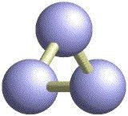
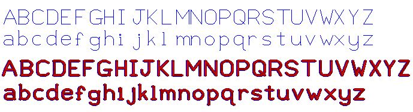

![[OpenRasMol]](../html_graphics/rasmolbutton.jpg)
|  |
|||||||||||
| Version | MAC PPC binaries |
MSWIN binaries |
RasWin Help File |
LINUX binaries |
RasMol Help File |
||||||
|---|---|---|---|---|---|---|---|---|---|---|---|
| 2.7.1 | 8 32 | 8 | raw gz | 8 16 32 | raw gz | ||||||
| 2.7.1.1 | 8 32 | 8 | raw gz | 8 16 32 | raw gz | ||||||
| 2.7.2 | 8 32 | 8 | raw gz | 8 16 32 | raw gz | ||||||
| 2.7.2.1 | 8 32 | 8 | raw gz | 8 16 32 | raw gz | ||||||
| See Source Code and Binaries for more. | |||||||||||
Basado en RasMol 2.6 de Roger Sayle
Biomolecular Structures Group
Glaxo Wellcome Research & Development
Stevenage, Hertfordshire, UK
Versión 2.6, Agosto 1995, Versión 2.6.4, Diciembre
1998
Copyright © Roger Sayle 1992-1999
y basado en modificaciones de
| Autor | Versión, Fecha | Copyright |
|---|---|---|
| Arne Mueller | RasMol 2.6x1 Mayo 1998 | © Arne Mueller 1998 |
| Gary Grossman and Marco Molinaro |
RasMol 2.5-ucb Noviembre 1995 RasMol 2.6-ucb Noviembre 1996 |
© UC Regents/ModularCHEM Consortium 1995, 1996 |
| Philippe Valadon | RasTop 1.3 Agosto 2000 | © Philippe Valadon 2000 |
| Herbert J. Bernstein | RasMol 2.7.0 Marzo 1999 RasMol 2.7.1 Junio 1999 RasMol 2.7.1.1 Enero 2001 RasMol 2.7.2 Agosto 2000 RasMol 2.7.2.1 Abril 2001 |
© Herbert J. Bernstein 1998-2001 |
| Autor | Item | Idioma |
|---|---|---|
| Isabel Serván Martínez, José Miguel Fernández Fernández |
2.6 Manual | español |
| José Miguel Fernández Fernández | 2.7.1 Manual | español |
| Fernando Gabriel Ranea | 2.7.1 menús y mensajes | español |
| Jean-Pierre Demailly | 2.7.1 menús y mensajes | francés |
| Giuseppe Martini, Giovanni Paolella, A. Davassi, M. Masullo, C. Liotto |
2.7.1 menús y mensajes 2.7.1 archivo de la ayuda |
italiano |
| Angel Herráez | 2.7.2.1 manual (revisión parcial) | español |
Las traducciones de la mayoría de los mensajes de RasMol en español fueron contribuidas por Fernando Gabriel Ranea (Laboratorio de Micología Museo de Farmacobotánica, Facultad de Farmacia y Bioquímica, Universidad de Buenos Aires (davinci@dinamica.com.ar)).
El manual original de RasMol fue creado por Roger Sayle. En julio de 1996, la Dra. Margaret Wong del Departamento de Química de la Universidad Tecnológica Swinburne, Australia, hizo una extensa revisión del manual de RasMol 2.5 que reflejaba adecuadamente el funcionamiento de RasMol 2.6. Eric Martz de la Universidad de Massachusetts efectuó posteriores revisiones. En mayo de 1997, William McClure de la Universidad Carnegie Mellon reorganizó la vesión HTML del manual en múltiple secciones que podían ser descargadas rapidamente y añadió el uso de marcos (frames). Partes del manual de la versión 2.7.1 de RasMol se obtuvieron de esta última versión, con la autorización de William McClure version usando el archivo rasmol.doc que Roger Sayle preparó para la versión 2.6.4 como fuente primaria.
La documentación fue actualizada por
última vez el 14 de abril de 2001
La versión inglesa de este manual fue editada por Herbert J.
Bernstein y Frances C. Bernstein.
La traducción española del manual de la versión de la Dra. Wong revisada por Eric Martz fue realizada por Isabel Serván Martínez y José Miguel Fernández Fernández
La actual traducción del Manual de RasMol 2.7.1 ha sido realizada usando como base la anterior de RasMol 2.6 por José Miguel Fernández Fernández (Departamento de Bioquímica y Biología Molecular. Universidad de Granada. España (jmfernan@ugr.es))
Para los cambios en el manual de RasMol 2.7.1 a RasMol 2.7.1.1 y a RasMol 2.7.2.1 la traducción de inglés a español fue hecha parcialmente por Herbert J. Bernstein usando el servicio de traducción de Alta Vista Babel Fish en http://babelfish.altavista.digital.com.
La traducción al español del manual de RasMol 2.7.2.1 fue revisada parcialmente por Angel Herráez (Departamento de Bioquímica y Biología Molecular, Universidad de Alcalá, España).
NOTA SOBRE LA TRADUCCIÓN AL ESPAÑOL:
Los comandos, órdenes y palabras clave de RasMol, aunque en algún caso se traduzcan, siempre conservan el texto inglés adjunto. La razón es que lo que se ha traducido, al menos por ahora es el manual, no el programa. RasMol está escrito en inglés y solo en ingles entiende las órdenes. Así por ejemplo los colores se traducen para su comprensión pero cuando se teclee un comando deberá emplearse el término adecuado en inglés.
Pedimos disculapas por algunos problemas que no hemos podido solucionar satisfactoriamente: Hay palabras del lenguaje de la programación que solo se usan en inglés. Hemos tratado de traducirlas siempre que ha sido posible, y en el peor de los casos la hemos traducido manteniendo a su lado el término inglés.
Por todo ello es seguro que habrá errores. Si se nos comunican al correo electrónico citado algo mas arriba, haremos lo posible por solucionarlos.
Todo lo afirmado en este texto en las diversas notas de derechos de autor y de reclamaciones es aplicable a la traducción.
Esta versión se basa en la versión 2.6_CIF.2 de RasMol, en RasMol 2.6x1 y en RasMol versión 2.6.4. Por favor lea en el documento NOTICE las importantes novedades que aparecen en este paquete. Si usted no planea cambiar RasMol, no solo está usted autorizado a hacer copias libres y gratuitas y distribuirlas, sino que se le anima fervientemente a ello, pidiendole lo siguiente:
Si desea emplear componentes importantes de de RasMol en algún otro programa, modificarlo el mismo RasMol, o de cualquier otra forma hacer lo que un legista pudiera llamar "trabajo derivado de", usted está, no solo autorizado, sino que se le anima a hacerlo. A cambio le rogamos que, por favor, haga lo siguiente:
Esta versión de RasMol no es de dominio público, pero se ofrece libremente a la comunidad en la esperanza del avance de la ciencia. Si desea hacer cambios, por favor hágalos en forma responsable, y, por favor, ofrézcanos la oportunidad de incluirlos en futuras versiones del programa RasMol.
|
|
|
|
|
|
|
RasMol copyright © Roger Sayle 1992-1999
Modificaciones de la versión 2.6x1 copyright © Arne
Mueller 1998
Modificaciones de la versión 2.5-ucb y 2.6-ucb copyright
© UC Regents/ModularCHEM Consortium 1995, 1996
Modificaciones de la versión RasTop 1.3 copyright ©
Philippe Valadon 2000
Modificaciones de las versiones 2.7.0, 2.7.1, 2.7.1.1, 2.7.2 y
2.7.2.1 copyright © Herbert J. Bernstein 1998-2001
Todos los derechos reservados. El empleo de la nota de copyright no implica publicación o revelación. La información contenida en este documento es considerada fiable, pero no se asume ninguna responsabilidad debida a su uso o por la invasión de derechos de otras personas como resultado de su uso. La información en este documento está sujeta a cambios sin aviso previo, y no representa la adquisición de un compromiso por parte del suministrador.
Este programa ha sido creado a partir de diversas fuentes. Gran parte del código procede de RasMol 2.6, tal y como fue creado por Roger Sayle.
Ver: ftp://ftp.dcs.ed.ac.uk/pub/rasmol
El código para la torsión angular, el nuevo código POVRAY3 y otros nuevos capacidades se derivan de las revisiones RasMol2.6x1 efectuadas por Arne Mueller.
See: ftp://nexus.roko.goe.net/pub/rasmol
El código para la impresión de los gráficos de Ramachandran se deriva de fisipl que fue creado por Frances C. Bernstein. Vease la cinta del programa de Protein Data Bank.
Las modificaciones CIF hacen uso de un librería basada en parte en CBFlib de Paul J. Ellis y Herbert J. Bernstein.
Ver: http://www.bernstein-plus-sons.com/software/CBF
Partes de CBFlib están fuertemente basadas en el paquete CIFPARSE de NDB en la Rutgers university.
Ver: http://ndbserver.rutgers.edu/NDB/mmcif/software
Por favor teclee los comandos de RasMol 'help copying', 'help general', 'help IUCR', 'help CBFlib', y 'help CIFPARSE' para obtener novedades de aplicables. Por favor teclee 'help copyright' para noticias sobre copyright. Si emplea RasMol V2.6 o una versión anterior, teclee la orden de RasMol 'help oldnotice'.
Esta versión se basa en gran parte en la versión 2.7.2 de RasMol, en la versión 2.7.1.1 de RasMol y en la versión 1.3 de RasTop e indirectamente en la versión 2.5-ucb de RasMol, en la versión 2.6-ucb de RasMol, en la versión 2.6_CIF.2 de RasMol, en RasMol la versión 2.6x1 de RasMol y en la versión 2.6.4 de RasMol. Si usted no planea cambiar RasMol, no solo está usted autorizado a hacer copias libres y gratuitas y distribuirlas, sino que se le anima fervientemente a ello, pidiéndole lo siguiente:
1. incluya con lo que distribuya la documentación completa, especialmente el archivo NOTICE, o bien proporcione una indicación clara de dónde los interesados pueden conseguir una copia de la documentación;
2. indique los créditos donde deban ser incluidos, citando adecuadamente la versión y los autores originales;
3. evite cualquier impresión de que alguno o alguno de los autores originales, o incluso los traductores, proporcionen algún tipo de garantía.
Si desea emplear componentes importantes de RasMol en algún otro programa, modificar el propio RasMol, o de cualquier otra forma hacer lo que un abogado pudiera llamar "trabajo derivado de", no solo está usted autorizado, sino que se le anima a hacerlo. Además de lo inficado antes, le rogamos que haga lo siguiente:
4. explique claramente en su documentación qué diferencias tiene su versión con respecto a de aquélla a la que se hace referencia en este texto, y
5. mantenga disponible el código fuente modificado.
Esta versión de RasMol no es de dominio público, pero se ofrece libremente a la comunidad en la esperanza del avance de la ciencia. Si desea hacer cambios, por favor hágalos en forma responsable, y, por favor, ofrézcanos la oportunidad de incluirlos en futuras versiones del programa RasMol.
Esta nota tse aplica a esta obra como un todo y a las obras que se incluyan en él:
* Las actividades creativas dependen del vivo intercambio de ideas. Existen leyes y usos que establecen derechos y responsabilidades a los autores y a quienes usan lo que los autores crean. Esta nota no intenta prevenir del uso de este software ni de los documentos comprendidos en el paquete, sino que trata de asegurar que no haya malos entendidos sobre los términos y condiciones de uso.
*Por favor lea la siguiente nota cuidadosamente. Si no entiende algún fragmento, por favor busque la asesoría profesional legal adecuada antes de emplear este programa y los textos incluidos en el paquete. Además de cualquier otro paso que usted deba dar, o al que pueda ser obligado para respetar los derechos de propiedad intelectual de las distintas partes implicadas, si usted hace uso del software y los documentos de este paquete, le rogamos de los debidos créditos citando este paquete, sus autores y la URL o cualquier otra fuente de la que usted lo hubiera obtenido, o referencias primarias equivalentes en la literatura citada, con los mismos autores.
* Parte de este software y los documentos asociados son propiedad intelectual de varias partes, y su ubicación en el paquete no implica que esos derechos hayan sido olvidados o disminuidos.
* Con respecto al software o a los documentos sobre los que exista un copyright, TODOS LOS DERECHOS ESTÁN RESERVADOS A LOS PROPIETARIOS DE TAL COPYRIGHT.
* Aun cuando los autores de lo diversos documentos y software de los que aquí se escribe han hecho un verdadero y fecundo esfuerzo para asegurar que todos los documentos son correctos y que el software responde de acuerdo con la documentación, y aunque apreciaríamos enormemente saber de cualquier problema que usted pueda encontrar, el programa y los documentos y los archivos que puedan ser creados con el programa se suministran **como están** sin ningún tipo de garantía en cuanto a corrección, posibilidad de difusión o ajuste a algún uso particular o general.
* LA RESPONSABILIDAD SOBRE CUALQUIER CONSECUENCIA ADVERSA DEL USO DE ESTE PROGRAMA Y/O LOS DOCUMENTOS ASOCIADOS O POR LOS ARCHIVOS CREADOS POR EL USO DE LOS CITADOS PROGRAMA Y DOCUMENTOS RECAE EXCLUSIVAMENTE SOBRE LOS USUARIOS DEL CITADO MATERIAL Y NO SOBRE EL AUTOR O AUTORES DE LOS CITADOS PROGRAMAS Y DOCUMENTOS.
Sujeto a su aceptación de las condiciones establecidas anteriormente, y a su respeto de los términos y condiciones descritas en esta y las demás notas, si usted no va a hacer ninguna modificación o a crear "trabajo derivado", usted tiene el permiso necesario para copiar libremente y distribuir este paquete, de acuerdo a lo siguiente:
1. Incluya la documentación completa, especialmente el archivo NOTICE, con el que usted puede distribuir o suministrar claras indicaciones de donde los interesados pueden conseguir una de la documentación; así como
2. Por favor de cómo créditos, donde estos deban ser incluidos como cita, la versión y correcta y los autores adecuados; y también
3. Por favor evite cualquier impresión de que alguno o alguno de los autores originales, o incluso los traductores, provean garantía de ninguna clase.
Si desea emplear componentes importantes de RasMol en algún otro programa, modificarlo el mismo RasMol, o de cualquier otra forma hacer lo que un legista pudiera llamar "trabajo derivado de", usted está, no solo autorizado, sino que se le anima a hacerlo. A cambio le rogamos que, por favor, haga lo siguiente:
4. Por favor explique claramente en su documentación que diferencias tiene su versión de aquella a que se hace referencia en este texto; y
5. Por favor mantenga el código fuente modificado disponible.
La siguiente nota es aplicable a RasMol V 2.6 y a las versiones anteriores.
La información contenida en este documento está sujeta a cambios sin noticia previa y no representa ninguna obligación por parte del suministrador. Este paquete se vende/distribuye bajo condición de que no será, mediante negocio o de otra forma, ser prestada, revendida, alquilada o cualquier forma de circularla sin el permiso previo de quien lo suministra, en cualquier forma de empaquetamiento o cobertura distinta de aquella en la que fue producida. Ninguna parte de este manual o del software acompañante puede ser reproducido, almacenado en sistemas de distribución sobre disco óptico o magnético, cinta o cualquier otro medio, o transmitido en cualquier forma o por cualquier medio, electrónico, mecánico, por fotocopia, grabación o para cualquier otro propósito que no sea el uso personal del propietario.
Este producto no puede ser usado, en ninguna forma, en la planificación, construcción, mantenimiento, operación o uso de cualquier instalación nuclear, ni en el vuelo, navegación o comunicación de nave aérea o equipo de apoyo en tierra alguno. El autor no será responsable, ni siquiera parcialmente, ante cualesquiera reclamaciones por daños y perjuicios derivados del uso de este manual, incluyendo muerte, insolvencia o declaración de guerra como consecuencia de su uso.
Last modified: 30 September 2000
IUCR Policy Copyright (C) 2000 International Union of Crystallography
LA siguiente Nota de Reclamaciones es aplicable a CBFlib V0.1, de la que el código es parcialmente derivado.
* Los materiales despachados aquí fueron desarrollados bajo el patrocinio del Gobierno Norteamericano. Ni los Estados Unidos, ni el U.S. D.O.E., ni la Universidad Leland Stanford Junior, ni sus empleados, otorgan ninguna garantía, implícita o explícita, o asumen ninguna responsabilidad legal o de cualquier otro tipo por lo ajustado, completo o útil de cualquier información, aparato, producto o proceso, ni representa que su uso no infrinja derechos privadamente protegidos. La mención de cualquier producto, su productor, o suministrador no será, ni se podrá entender como, implicación de aprobación, desaprobación, o ajuste a ningún uso concreto. Los Estados Unidos y la Universidad siempre retendrán el derecho a usar y difundir los temas producidos para cualquier propósito.
Nota 91 02 01
Partes de este software están profundamente basadas en el paquete CIFPARSE DE NDB de la Rutgers University. Vease
http://ndbserver.rutgers.edu/NDB/mmcif/software
CIFPARSE es parte de la aplicación NDBQUERY, un programa componente del Proyecto Nucleic Acid Database Project [ H. M. Berman, W. K. Olson, D. L. Beveridge, J. K. Westbrook, A. Gelbin, T. Demeny, S. H. Shieh, A. R. Srinivasan, and B. Schneider. (1992). The Nucleic Acid Database: A Comprehensive Relational Database of Three-Dimensional Structures of Nucleic Acids. Biophys J., 63, 751-759.], cuya cooperación es reconocida con agradecimiento, especialmente en la forma de diseñar conceptos creada por J. Westbrook.
Por favor esté advertido de la siguiente comunicación de CIFPARSE API:
Este software se suministra SIN GARANTIA DE APLICABILIDAD O ADECUACIÓN A UN PROPÓSITO PARTICULAR Y SIN NINGÚN OTRO TIPO DE GARANTÍA, EXPRESADA O IMPLICITA. RUTGERS NO AFIRMA NI GARANTIZA QUE EL SOFTWARE NO NOT INFRINGE PATENTES, COPYRIGHT U OTRO DERECHO DE PROPRIETARIO.
.La herramienta de ayuda RasMol (help) puede activarse tecleando "help <tema>" o "help <tema> <subtema>" en la línea de comandos. Una relación completa de órdenes de RasMol puede obtenerse con "help commands". Una única interrogación (?) puede usarse como abreviatura de "help". Por favor teclee "help notices" para conseguir las importantes notas.
Para arrancar RasMol desde el inductor de UNIX o el de VMS, teclee el comando 'rasmol'. A continuación del comando puede añadir un nombre de archivo. Por defecto, inmediatamente del arranque el programa visualiza el siguiente mensaje, para identificar el número de versión y la profundidad de visualización del programa que se va a correr: Habrá algunas variaciones en este mensaje en función de su elección de plataforma:
RasMol Molecular Renderer
Roger Sayle, August 1995
Copyright (C) Roger Sayle 1992-1999
Version 2.7.2.1 April 2001
Copyright (C) Herbert J. Bernstein 1998-2001
*** See "help notice" for further notices ***
[32-bit version]
Inmediatamente debajo de este mensaje aparece el inductor de la línea de comandos de 'RasMol'. Si el programa se ejecuta en un sistema X windows, el programa determina el tipo de visualización que se emplea. Si la pantalla tiene un tampón de marco de color de 8 bit o de 24 bit, RasMol crea otra ventana, que se usa para visualizar opciones de menú y las imágenes que RasMol devuelve. Si hay solo una ventana disponible, RasMol solo podrá ser empleado desde la línea de comandos. Los comandos pueden ser escritos para manipular el modelo, y para dar salida a la imagen generada hacía un archivo de salida.
Si el programa corre bajo entorno X Windows con una ventana de color disponible, RasMol crea una ventana adicional para exhibir la molécula dada interactívamente, conforme es manipulada. Si RasMol no corre bajo entorno X Windows, el programa responderá con el mensaje "No se detectó un display utilizable". RasMol puede ser manejado de forma que no presente una ventana gráfica, usando la opción de línea de órdenes "nodisplay". Esto es particularmente útil para usar RasMol como proceso en "en el fondo" (batch).
Es posible especificar el nombre de un archivo de coordenadas o bien de un script, o ambos, en la línea de órdenes UNIX/VMS. El formato para hacerlo es añadir la opción "- script "nombre de archivo" a la línea de comandos. Un archivo de coordenadas puede cargarse colocando su nombre en la línea de órdenes, precedido de la opción del formato de archivo. Si no se especifica el tipo de archivo, por defecto se asumirá que es PDB. Las opciones válidas son: '-pdb', '-mdl', '-mol2', '-xyz', '- alchemy' o '-charmm', que se corresponden a Brookhaven, MDL Mole, Sybyl Mol2, xyz de MSC, Alchemy y CHARMm respectivamente. Si simultáneamente se especifican tanto un archivo, como un script en la línea de comandos, la molécula se carga primero y después los comandos del script se aplican a él. Si el archivo no se encuentra, el programa muestra el mensaje de error "Error: File not found!" y el usuario recibe el inductor de RasMol.
Para cerrar RasMol, el usuario puede escribir el comando "quit" en el inductor de "RasMol", y el programa volverá al inductor de usuario de UNIX. Alternativamente, si un inductor distinto del principal de RasMol se visualiza, el usuario puede pulsar control-C (^C) para dejar el programa. El mensaje '***Quit***' aparece en la consola, antes del usual inductor de unix sea mostrado de nuevo. Otra forma de terminar el programa es seleccionando la opción Quit del menú, al fondo del menú principal.
Para arrancar RasMol en Microsoft Windows, haga doble clic en el icono RasMol del gestor de programas. Cuando RasMol arranca por primera vez el programa muestra una ventana principal única con un fondo negro y además provee de una ventana para la línea de comandos, minimizada, como un icono (win 3.x) o en la barra de funciones (95 y NT). La línea de comandos puede ser maximizada.
Se puede especificar el nombre de un archivo de coordenadas atómicas o el nombre de un script o ambos en la ventana de línea de comandos. El formato será para un archivo script añadir la opción '- script <nombre-del-archivo>'a la línea de comando. Un archivo de coordenadas moleculares se especifica escribiendo su nombre en la línea de comandos, opcionalmente precedido por la opción de tipo de formato. Si no se especifica el tipo de archivo, por defecto se asumirá que es PDB. Las opciones válidas son: '-pdb', '-mdl', '-mol2', '-xyz', '- alchemy' o '-charmm', -'mopac' y 'CIF' que se corresponden con los formatos Protein Data Bank, Mol de Molecular Design Limited, Sybyl Mol2 de Tripos, XMOL xyz de MSC, Alchemy de Tripos, CHARMm, MOPAC de J. P. Stewart y CIF o mmCIF de la Unión Internacional de Cristalográfía, respectivamente. Si simultáneamente se especifican tanto un archivo, como un script en la línea de comandos, la molécula se carga primero y después los comandos del script se aplican a él. Si el archivo no se encuentra, el programa muestra el mensaje de error "Error: File not found!" y ante el usuario recibe el inductor de RasMol.
Para usar RasMol en un Macintosh, haga doble clic en el icono de RasMol empleando "Finder". Al empezar RasMol el programa muestra dos ventanas, la de encima (con el fondo negro) es la ventana gráfica o "canvas" y la de abajo (de fondo blanco) es la ventana de la línea de comandos de RasMol. RasMol en un Macintosh puede arrancar, también clicando por duplicado en un archivo creado por la aplicación con la firma 'RSML'. Esto arrancará la aplicación y dará paso al archivo seleccionado para ser cargado. No hay forma de especificar el formato del archivo en la línea de órdenes en un Macintosh por lo que RasMol tiene que determinar el tipo de formato del archivo inspeccionando el nombre. Los archivos del tipo 'RSML' se asume que son script de RasMol, los del tipo 'mMOL' son asumidos como archivos MDL Mol y todos los demás (principalmente 'TEXT') se asume que están en formato PDB. A diferencia de las demás versiones de RasMol es imposible de especificar simultáneamente un script y un archivo de coordenadas.
Arrastrando y soltando (dragging and dropping) los archivos script sobre alias, o accesos directos de RasMol pueden fracasar debido a errores respecto al directorio correcto. Hacer doble clic sobre un " script puede tener las mismas consecuencias si existen diferentes copias del programa.
Note que debido a que en un Macintosh solo una ocurrencia de cada aplicación puede correrse cada vez, si hiciera doble clic sobre otra archivo clasificado como 'RSML', la copia activa de RasMol expulsará (zap) la molécula en uso y la substituirá por la recién clicada.
En cualquier plataforma RasMol muestra dos ventanas, la principal de gráficos o canvas de fondo negro y una segunda ventana para la línea de comandos o ventana terminal. Encima de la ventana gráfica (en un MacIntosh en la parte superior de la pantalla) está la barra de menús de RasMol. El contenido de esta barra cambia de plataforma a plataforma para soportar las líneas generales de la interfase gráfica de usuario, sin embargo todas las plataformas soportan los menús desplegables 'File', 'Display', 'Colours', 'Export' y 'Options'. La ventana gráfica tiene dos barras de desplazamiento (scroll) a la derecha y abajo que pueden ser usadas para mover, interactívamente, la molécula.
Mientras el puntero del ratón está localizado en el área de gráficos de la ventana principal, este será representado como una cruz, para poder centrar los objetos susceptibles de ser picados; en cualquier otro caso aparecerá como una punta de flecha. Cualquier carácter que sea escrito en el teclado mientras la ventana gráfica esté 'enfocada' (lo que quiere decir que está activa) se redirecciona a la ventana de la línea de órdenes. Esto le proporciona la facilidad de no tener que pasar de una a otra ventana para dar órdenes a RasMol.
La ventana principal puede redimensionarse en cualquier momento de la sesión. Lo cual tiene por efecto reescalar la imagen visualizada, si la hubiera. RasMol impone como limites al tamaño de la ventana el permitir visualizar las barras de desplazamiento y el menú superior, y que todo junto ocupe una única pantalla. En máquinas con insuficiente memoria de video los intentos de agrandar la ventana pueden fracasar, en cuyo caso RasMol produce el mensaje de error 'Renderer Error: Unable to allocate frame buffer!' o similar (según el sistema operativo en que corra).
En los sistemas de visualización de 8 bits, cuando el
número de colores requerido por el programa exceda los
colores libres en la pantalla, el programa usa su propio mapa de
colores. El efecto es que temporalmente todo lo que aparezca en la
pantalla que no sea la ventana gráfica de RasMol aparece en
falsos colores cuando el puntero del ratón esté sobre
dicha pantalla. Si el puntero del ratón se desplaza fuera de
la pantalla de visualización de RasMol, los colores
originales de la otra ventana vuelven, y la imagen sobre el fondo
es a su vez mostrada en falso color. En cuanto el número de
colores requerido vuelve a los límites de la capacidad de la
pantalla vuelve la normalidad.
Aquí se presenta un resumen de los controles clica-y-arrastra de ratón de RasMol. El comando set mouse por defecto está ajustado a set mouse rasmol, que proporciona los controles resumidos a continuación. Sin embargo, también existen los modos set mouse insight y set mouse quanta (que no se muestran aquí).
Acción |
Windows |
Macintosh |
Rotar X,Y |
Izquierda |
No modificado |
Trasladar X,Y |
Derecha |
Comando* |
Rotar Z |
Shift-derecha |
Shift-Commando* |
Zoom |
Shift-izquierda |
Shift |
Plano seccionado (slab) |
Ctrl-izquierda |
Ctrl |
*En algunos Macs, la opción (Alt) tecla tiene el mismo efecto que el comando "key" de RasMol..
La barra de desplazamiento (scroll bar) que atraviesa la parte inferior del marco se usa para rotar la molécula sobre el eje y, i.e. gira el punto mas próximo de la molécula a derecha o izquierda, mientras que la de la derecha del marco lo hace sobre el eje x, i.e. el punto mas próximo sube o baja. Cada una de estas barras tiene un indicador que señala la posición relativa de la molécula. El punto inicial de este indicador es el centro de cada barra. Esta barra de desplazamiento puede ser operado en otras dos formas. La primera pulsando cualquier botón del ratón en cualquier punto de la barra de desplazamiento, indicando una rotación relativa respecto a la posición actual. El segundo es picando una de las flechas en los extremos de las barras rotando la moléculas en valores fijos. Rotar la molécula por el segundo método puede causar que los indicadores de las barras de desplazamiento salten de un extremo a otro de la barra. Eso indica una revolución completa (desplazamiento de toda la longitud de la barra). El ángulo girado usando las flechas depende del tamaño de la ventana.
Para identificar un átomo o enlace concreto que esté visualizándose, RasMol permite al usuario picar sobre cualquier objeto que está en pantalla.. El ratón es utilizable para este fin siempre que esté mostrando como puntero la cruz, y que este puntero se encuentre sobre el objeto que se desea seleccionar. En ese momento pulsar cualquier botón del ratón tiene como resultado seleccionarlo. En el caso de que el ratón no este, exactamente sobre un objeto RasMol se encarga de adjudicar la selección al átomo más próximo.
El programa dará como salida en la ventana terminal (la de la línea de comando), el tipo atómico, número de serie, nombre y número del residuo. Si el átomo forma parte de una cadena con nombre, este también se visualiza.. A continuación se dan dos ejemplos de la salida generada seleccionando un átomo:
Atom: CA 349 Group: SER 70
Atom: O 526 Hetero: HOH 205 Chain: P
La primera línea describe el carbono alfa de la serina 70 de una proteína El número de serie de PDB para este átomo es el 349. La siguiente línea describe el átomo de oxígeno de una molécula de agua unida a la cadena P de la molécula principal. La palabra 'Hetero' distingue las moléculas heterogéneas (p. e. cofactores) de los residuos de la molécula principal, anotada como 'Group'. [Estos dos átomos son descritos por las dos expresiones 'SER70.CA' y 'HOH205:P.O', respectivamente, cuando se usan los comados de RasMol select y restrict.]
Clicar el ratón sobre un átomo puede ser una forma de identificarlo (orden identify), pero también para hallar las distancias (distances) entre dos átomos (o para activar un monitor distante (distance monitor)), o el angulo de enlace (the bond angle) definido por 3 átomos, el angulo de torsión (torsion angle) definido por 4 átomos, activar o desactivar las etiquetas (labels on o off), o para especicar el centro de rotación (center of rotation) . Véase la orden set picking para detalles.
Caja de control Si RasMol detecta una caja de control unida al puesto de trabajo del usuario, automáticamente se podrá manipular la molécula interactívamente con los mandos. Una vez que RasMol arranca, marca los visualizadores LED sobre cada mando, 'ROTATE X', 'ROTATE Y', 'ROTATE Z' y 'ZOOM' en la fila superior de izquierda a derecha, y 'TRANS X', 'TRANS Y', 'TRANS Z' y 'SLAB' de izquierda a derecha en la fila de abajo. Rotando cada uno de los botones automáticamente se transformará y revisualizará, interactívamente, la molécula. Los controles solo serán activos mientras el puntero del ratón esté sobre la ventana gráfica. Si varias aplicaciones simultáneamente usan la caja de controles, deben recordarse las etiquetas o marcas asignadas a cada programa, ya que cada aplicación puede sobreescribir en los LEDS.
La rotación sobre los ejes X e Y actualizará automáticamente los indicadores en las barras de desplazamiento apropiadas. Todos los mandos de rotación giran la molécula 180 grados por cada vuelta completa del mando. El resto de los botones adecuan sus valores a los rangos permitidos; girar esos diales mas allá de sus límites no provoca efecto alguno. El centro de rotación de la molécula puede cambiarse con el comando centre desde la línea de comandos, o con la orden set picking centre seguidos por un clic de ratón.
El mando 'ZOOM' permite ampliar interactívamente la molécula entre el 10% y el 200% del tamaño fijado por defecto como el original. Girando el dial en el sentido de las agujas del reloj aumenta el tamaño de la molécula y en el contrario la disminuye. Una revolución del mando se corresponde con el 100% de cambio de tamaño.
El mando 'SLAB', que solo es efectivo cuando la opción slab está activada, permite al usuario desplazar el plano frontal desde el punto más próximo al mas lejano. Una rotación completa del botón slab se corresponde con un movimiento equivalente a la mitad de la distancia entre él más próximo y él más lejano de la molécula. El giro en el sentido de las agujas del reloj acerca el plano al usuario (incrementando el número de objetos visibles), y el contrario lo aleja (eliminando objetos de la visualización).
El modo de rebanado (slab) tecleando la orden 'slab on' en la línea de comandos o activando la opción slab del menú de opciones.
Desplazar a lo largo de los ejes X e Y permite mover el centro de la molécula en la zona gráfica de la pantalla. Rotación y ampliación también se ejecutan respecto al centro de rotación y al de la molécula, respectivamente, que a menúdo pueden no coincidir con el centro de la zona gráfica. El mando TRANS Z no tiene efecto por el momento.
RasMol permite ejecutar comandos de forma interactiva tecleándolos en la ventana de terminal (command line). Los caracteres tecleados son procesados en la línea de comandos. Cada orden debe darse como una línea separada terminada pulsando retorno de carro. Las palabras clave (órdenes o comandos) son caso insensibles y por tanto no diferencian mayúsculas de minúsculas. Todos los espacios en blanco (así como tabuladores y alimentación de hojas), excepto aquellos que separan palabras clave de argumentos, son ignorados. Una restricción interna limita el tamaño de la línea a 256 caracteres. Los delimitadores de cadenas son las comillas dobles o sencillas. La colocación del carácter "número" # o sostenido (a veces en español se le llama barrilete) sin comillas termina la línea, lo que permite su uso para líneas de comentarios.
Si se detecta un error sintáctico a la entrada de un comando interactivo, RasMol indica la localización del error en la orden colocando el carácter '^' debajo de la palabra o letra incorrecta o incoherente, y escribiendo un mensaje de error en la línea siguiente. Si el comando no es reconocido por RasMol, el programa genera el texto 'Unrecognised command!' y restaura el inductor (prompt principal). Si la línea incluye información no requerida al final del comando y los argumentos, RasMol ejecutará el comando, pero mostrará el texto de advertencia 'Warning: Ignoring rest of command!'. Algunas órdenes pueden pedir al usuario mas información. Cuando ocurre así aparece un inductor diferente que se discutirá en la sección referencia de órdenes.
Cuando RasMol da como salida de pantalla un mensaje de error de diagnóstico o de aviso debido a la selección inadecuada de una orden alojada en los menús desplegables, la línea de órdenes actual se limpia. El inductor se revisualiza a continuación del mensaje interno.
RasMol permite una edición básica de la línea de comandos. Tanto la tecla espacio atrás (backspace), como suprimir (delete), como ^H (Control-H) borra el carácter previo, mientras que ^D puede usarse para eliminar el carácter que hay bajo el cursor. Otros varios caracteres pueden emplearse para mover el cursor a lo largo de la línea. Los caracteres ^B, ^F, ^A y ^E mueven el cursor atrás un único espacio, adelante un solo espacio, al principio de la línea, o al final de ella, respectivamente. Si el cursor no está al final de la línea, los caracteres tecleados se insertan en la línea sin eliminar a los existentes. Tras la edición un retorno de carro entrará la información, sin importar donde esté el cursor. Ya que RasMol es incapaz de mover el cursor arriba, a la anterior línea, se debe cuidar la edición de comandos que ocupen varias. En el caso de otro proceso interrumpa o interfiera con la edición, el carácter ^L puede usarse para revisualizar la línea en pantalla.
RasMol mantiene una historia de las órdenes usadas recientemente, de tal forma que no se necesita reescribir repetidamente. Control P ^P en la línea de comandos recupera el anterior comando y control N ^N el siguiente. Estas órdenes pueden ser editadas como se describe mas adelante. Moviéndose atrás y adelante en la historia de las órdenes se deshacen las modificaciones creadas en la orden editada. El número de comandos retenidos depende de su longitud. RasMol puede retener mas órdenes cortas y menos si son largas.
Los usuarios de Microsoft Windows o de X windows y aquellos con un terminal 'vt100' compatible (como p.e. un 'xterm') pueden usar los caracteres de control del teclado para el puntero (las flechas) para hacer mas rápida la manipulación de la historia de órdenes. Las flechas derecha e izquierda tienen el mismo efecto que control F ^F y control B ^B, y mueven adelante y atrás un carácter cada vez.. Las flechas arriba y abajo simulan ^P y ^N, evocando las órdenes anterior y posterior respectivamente.
Los Usuarios de la versión para Macintosh pueden usar las cuatro flechas del cursor para desplazarse arriba y abajo por las sucesivamente ejecutadas líneas de órdenes; y atrás y adelante en una línea concreta. Pulsar 'return' o 'enter' en cualquier momento lleva a la ejecución del contenido de la línea actual, e.g. seleccionada o editada.
Dimensiones en RasMol
Todas las dimensiones en RasMol, como radios y distancias, pueden especificarse tanto en unidades RasMol como en Angstroms. Las unidades RasMol fueron creadas para poder especificar valores de tamaños razonables para operaciones ejecutadas en RasMol. Una unidad RasMol se corresponde con 1/250 de Angstrom,asi que sus valores aparecen principalmente como cientos. Por esta razón, si a RasMol se le da una distancia dada en cifras que no contengan decimales se asume que son unidades RasMol. Por ejemplo, el comando 'spacefill 300' especifica una esfera con un radio de 300 unidades RasMol, o sea 1.2 Angstroms.
Sin embargo, las dimensiones en RasMol se pueden especificar, también, en Angstroms colocando un punto decimal en el número. Por ejemplo, 'spacefill 1.2' especifica una esfera con el radio en Angstroms. Esto es particularmente útil para la distancia de corte en expresiones con parámetro 'within' (en).
Cada vez que se arranca RasMol, busca un archivo de comandos de inicialización para ejecutarlo antes de presentar el prompt (inductor)al usuario. Este archivo se llama .rasmolrc en sistemas UNIX, y RASMOL.INI en sistemas VMS y Microsoft Windows. El formato y la ejecución de este archivo es idéntico tal de un archivo script de RasMol.
RasMol busca, en primer lugar, el archivo de inicialización en el directorio actual, y si no lo encuentra, en el hogar ("home") del usuario. En todos los sistemas la variable de entorno HOME se puede emplear para nombrar el directorio hogar apropiado. Si no existe un archivo personal de inicialización se leerá el archivo rasmolrc (o RASMOLRC) en el directorio del sistema RasMol al que apunte la variable de entorno RASMOLPATH. Este directorio debería contener también el archivo de ayuda on-line rasmol.hlp. En sistemas UNIX, RASMOLPATH se ajusta, típicamente para ser '/usr/local/lib/rasmol'.
A diferencia de la orden script, .rasmolrc, no generará un mensaje de error si no encuentra el archivo. El archivo del sistema rasmolrc se emplea comúnmente por los gestores de sistemas para visualizar información sobre la instalación local y para que quien necesita ayuda reciba una orden eco de RasMol detallando un número de teléfono, o dirección de correo electrónico para contactar.
RasMol soporta Comunicación entre procesos (Inter Process Communication (IPC)) en una u otra forma, en cualquier plataforma. En Microsoft Windows, IPC se implementa usando Dynamic Data Exchange (DDE), en un MacIntosh IPC se implementa usando Apple Events y en un sistema X Windows IPC se implementa usando el protocolo de comunicación de John Ousterhaut Tcl/Tk.
Cuando RasMol arranca en un sistema X window se registra ante el servidor X window como un interprete Tcl. Desde una aplicación Tcl tal como 'wish', se puede usar órdenes Tcl 'winfo interps' para determinar el interpretre registrado actualmente en la pantalla. En primera instancia RasMol se registra como 'rasmol', en segunda instancia como 'rasmol2', en tercera como 'rasmol #3' y así sucesivamente. El interprete Tcl puede fácilmente enviar una orden a rasmol empleando el comando send interconstruido. RasMol interpreta el parámetro de cadena para la orden send no como una función Tcl para ejecutar, sino como una orden de RasMol. Así, teclear 'send {rasmol} {background red}' en el interprete deseado causará que la ventana de visualización de RasMol cambie de color. Usando lo mismo codificado como protocolo Microsoft's DDE Execute, pueden enviarse órdenes múltiplesen un único 'send', colocando los comandos consecutivamente entre corchetes. RasMol ejecutará todos los comandos que haya en un 'send' antes de refrescar una pantalla.
En Microsoft Windows, RasMol soporta un protocolo DDE completo. Las funciones más simples son accesibles enviando una orden de ejecución DDE a la aplicación 'RasWin' y alguna especificación. Esto arrancará una conversación DDE con la mas recientemente arrancada instancia de RasMol. Aunque cualquier tema puede ser especificado, se recomienda emplear 'System' y/o 'RemoteControl'. De nuevo los contenidos del paquete ejecutable es una cadena para su ejecución por RasMol. Si el primer carácter distinto de espacio en blanco es una apertura de corchetes, la cadena se interpreta como una secuencia de órdenes encadenadas entre corchetes; pero la cadena puede constar de un único comando. Los comandos entre corchetes opcionalmente pueden separarse por espacios y/o dos puntos. RasMol puede también actuar como un 'servidor de datos' soportando uniones (links) calientes, fríos y templados. Los items DDE actualmente soportados incluyen 'Name', 'Image', 'Pick', 'Count' que significan nombre de molécula, imagen actualmente visualizada (en formato Microsoft DIB), la expresión átomo del último átomo picado (o una cadena vacía) y el número de átomos seleccionados, respectivamente. Usar un enlace caliente o templado (hot o warm link) en el item 'Pick', p.e., permite que una aplicación como Microsoft Word, Excel o Visual Basic responda cada vez que el usuario pica un átomo en RasMol.
RasMol en un Apple Macintosh soporta AppleEvents. Actualmente solo soporta los cuatro sucesos del núcleo, abrir aplicación, abrir documento, imprimir documento y salir de todo, ya que abrir documento determina sus acciones por la firma de tipo de documento se puede usar para implementar un IPC genérico. Debido a que RasMol para Macintosh trata todos los archivos de tipo 'RSML' como script (guiones), solo se necesita que la aplicación que envía coloque todos los comandos para ser ejecutados en un archivo temporal, ajustar el tipo del archivo a 'RSML' y entonces enviar a RasMol un "abrir documento AppleEvent" con el nombre del archivo como parámetro.
RasMol permite ejecutar comandos interactivos tecleados tras el inductor "RasMol" en la ventana de la línea de comandos. Las órdenes se dan siempre en líneas separadas. Se pueden utilizar tanto letras mayúsculas como minúsculas para los comandos, ya que es insensible a esta característica. Los espacios en blanco son ignorados excepto en aquellos casos en los que sirvan para separar las órdenes de sus argumentos.
A continuación presentamos una lista de los comandos y claves reconocidos actualmente por RasMol.
|
Sintaxis: backbone {<booleano>}
backbone <valor>
backbone dashes
La orden "backbone" de RasMol hace posible la representación del esqueleto del polipéptido como una serie de enlaces que conectan los carbonos alfas adyacentes de cada aminoácido en una cadena. La visualización de estos enlaces a lo largo del eje de la molécula se activa o desactiva con el parámetro de la orden, al igual que con la orden wireframe. Con la orden "backbone off" se desactivan los "enlaces" seleccionados y con "backbone on" o un número se activan. El número puede ser utilizado para especificar en unidades angstroms o unidades de rasmol el radio del cilindro de la representación. Un valor de parámetro de 500 (2.0 angstroms) o mayor puede resultar en un error que aparecerá como "Valor del parámetro demasiado grande" (Parameter value too large). Los elementos de la representación se pueden colorear utilizando el comando de RasMol colour backbone.
Esta orden se puede utilizar como uno de los conjunto predefinido ("help sets") y como un parámetro para las órdenes "set hbond" y "set ssbond". El comando de RasMol trace es sinónimo de "backbone", en contraste con backbone que conecta los carbonos alfa mediante líneas rectas.
Este "esqueleto" puede visualizarse "borrado" usando la orden 'backbone dash'.
Sintaxis: background <color>
La orden de RasMol background selecciona el color del "lienzo" de fondo. El color pude ser determinado a través del nombre del color o por medio de componentes triples de Rojo, Verde y Azul (RVA) separados por comas y delimitados por corchetes. Al teclear la orden help colours se obtendrá una lista de los nombres de colores predefinidos y reconocidos por RasMol. Si se utiliza X Windows, RasMol es capaz de reconocer aquellos colores que se encuentran en la base de datos de nombres de colores del servidor X.
La orden background es sinónima de set background.
Sintaxis: cartoon <número>
La orden de RasMol cartoon extiende las representaciones de cintas para permitir mostrar la representación de Richardson (MolScript). Actualmente se implementan como cintas delgadas. La forma mas simple de obtener este tipo de representación es su uso desde el menú "display". Si empleamos la orden "cartoon" o "cartoons" en la línea de órdenes de RasMol se verán así representados los residuos seleccionados actualmente como una cinta estrecha, cuya anchura de especifica con los argumentos de la orden. Si usamos la orden cartoons sin parámetro alguno el ancho de las cintas tomará del tipo de estructura secundaria de la proteína, tal y como se describe en el comando ribbons. Por defecto, el extremo C-terminal de las hojas beta representará como la cabeza de la flecha..
Todo esto puede mejorarse o desactivarse usando la orden set cartoons <boolean> . La profundidad de la cinta se puede fijar usando el comando. Este comando, sin parámetro devuelve ambas opciones a sus valores por defecto.
Sintaxis: centre {<expresión>} {translate|center}
center {<expresión>} {translate|center}
La orden center determina el punto alrededor del que la orden rotate y las barras de desplazamiento hacen girar la molécula en cuestión. Sin un parámetro, la orden "centre" reubica el centro de rotación en el centro de gravedad de la molécula. Si se especifica una expresión de átomo, RasMol hace girar la molécula alrededor del centro de gravedad del grupo de átomos especificados por la expresión. Por lo tanto, si la expresión especifica un único átomo, dicho átomo permanecerá "inmóvil" durante las rotaciones.
Teclee 'help expression' para obtener mas información sobre cualquier orden.
Alternativamente la acción de centrar puede darse mediante una coma separada por los 3 valores [CenX, CenY, CenZ] en unidades RasMol (1/250 of an Ångstrom) a partir del centro de gravedad de la molécula El triplete debe ser encerrado entre corchetes.
Las formas opcionales 'centre ... translate' y 'centre ... center' puede ser utilizado especificar el uso del centro desplazado de la rotación (no no necesariamente en el centro de la lona) o un centrode la rotación que se pone en el centro de la lona. Comenzando con RasMol 2.7.2, el valor por defecto es centrar el nuevo eje en la lona.
Sintaxis: clipboard
La orden de RasMol clipboard coloca la imagen representada en un determinado momento en "clipboard" de gráficos local.
Nota: esta orden aún no se puede utilizar con los sistemas UNIX o VMS; está ideada para hacer más fácil la transferencia de imágenes entre aplicaciones bajo Microsoft Windows o Apple Macintosh
Si se está operando con el programa RasMol sobre los sistemas UNIX y VMS, esta función se puede realizar generando una "imagen rendida" (raster image) en un formato que el programa receptor puede leer usando la orden de RasMol write.
Sintaxis: colour {<objecto>} <color>
color {<objecto>} <color>
Esta orden sirve para colorear los átomos (u otros elementos) de la región seleccionada. El color puede ser determinado a través del nombre del color o de componentes triples de Rojo, Verde y Azul (RVA) separados por comas y delimitados por corchetes. Un triplete típico es [255,255,255] que representa el color blanco. Al teclear el comando help colours se obtendrá una lista de los nombres de colores predefinidos reconocidos por RasMol.
Los objetos permitidos son atoms, bonds, backbone, ribbons, labels, dots, hbonds, y ssbonds. Si no se especifica ningún objeto, la clave que, por omisión, se adopta es atom. Cierto tipo de objetos definen algunos esquemas de colores.
El esquema de color "none" (ninguno) puede ser aplicado a todos los objetos excepto átomos (atoms) y puntos (dots), dejando claro que los objetos seleccionados no tienen color propio sino que usan el color de sus átomos asociados (es decir, los átomos que ellos conectan). Los elementos del átomo se pueden colorear también por cpk, amino, chain, group, shapely, structure, temperature, charge, y user. Con la ayuda de type, se pueden colorear también los enlaces de hidrógeno y con electrostatic potential las superficies de punto.
Sintaxis: connect {<booleano>}
La orden de RasMol connect obliga a RasMol a (re) calcular la conectividad de la molécula con la que estamos trabajando. Si el archivo original de entrada de datos contenía información sobre la conectividad, se descarta. La orden connect false utiliza un algoritmo heurístico muy rápido adecuado para determinar el enlace en grandes biomoléculas tales como proteínas o ácidos nucleicos. La orden connect true usa un algoritmo más lento pero más exacto basado en radios covalentes que es más apropiado para moléculas que contienen elementos inorgánicos o "anillos tensionados". Si no se introduce ningún parámetro, RasMol determina qué algoritmo utilizar tomando como base el número de átomos en el archivo. Una cantidad mayor que 255 átomos hace que RasMol utilice la ejecución más rápida. Este es el método aplicado para determinar el enlace, si es necesario, cuando una molécula es leída en primer lugar utilizando la orden "load".
Sintaxis: define <identificador> <expresión>
La orden define permite al usuario asociar un grupo arbitrario de átomos con un identificador único. Esto hace posible la definición de grupos definidos por el usuario. A estos grupos se les declara estáticamente, es decir, una vez definidos, el contenido de los grupos no cambian, incluso si la expresión que los define depende de las transformaciones llevadas a cabo en ese preciso momento y de la representación de la molécula.
Sintaxis: depth {<booleano>}
depth <valor>
La orden de RasMol depth activa, desactiva, o sitúa el plano del detrás-truncamiento que corta el eje Z de la molécula. El programa sólo dibuja aquellas porciones de la molécula que se encuentran más cercano al espectador que el plano del detrás-truncamiento. El número entero valora el rango a partir de la cero en el muy posterior de la molécula a 100 que está totalmente delante de la molécula. Valores intermedios determinan el porcentaje de la molécula que va a ser dibujada.
Este comando obra recíprocamente con 'slab <valor>' ordene, que acorta al frente de un plano dado del z-truncamiento.
Sintaxis: dots {<booleano>}
dots <valor>
La orden dots se usa con el fin de generar una superficie de puntos Van der Waal alrededor de los átomos seleccionados en un determinado momento. Las superficies de puntos visualizan puntos a una distancia regular en una esfera de radio Van der Waas alrededor de cada átomo seleccionado. Aquellos puntos que estarían ocultos dentro del radio de Van der Waal de cualquier átomo (seleccionados o no) no se visualizan. La orden dots on borra cualquier superficie de puntos existentes y genera una superficie de puntos alrededor del conjunto de átomos actualmente seleccionados con una densidad de error de puntos de 100. El comando dots off borra cualquier superficie de puntos existente. Podemos especificar la densidad de puntos proporcionando un parámetro numérico entre 1 y 1000. Este valor corresponde aproximadamente al número de puntos que aparece en la superficie de un átomo de tamaño medio.
Por defecto, el color de cada punto en la superficie de puntos es el mismo que el del átomo que se encuentre más próximo a él en el momento de generar la superficie. Con la orden colour dots podemos cambiar el color de la superficie de puntos completa.
Sintaxis: echo {<cadena>}
La orden de RasMol echo se utiliza para visualizar un mensaje en la pantalla del terminal de RasMol. El parámetro de cadena puede ser opcionalmente delimitado en caracteres separados por comillas. Si no especificamos ningún parámetro, la orden echo visualiza una línea en blanco. Este comando es especialmente útil a la hora de visualizar un texto del archivo de RasMol script
Sintaxis: English
La orden de RasMol 'English' fija los menús y los mensajes a las versiones inglesas. Las órdenes 'French', 'Italian' y 'Spanish' se pueden utilizar para elegir los menús y los mensajes en francés, italiano e español.
Sintaxis: French
La orden de RasMol 'French' fija los menús y los mensajes a las versiones francesas. Las órdenes 'English', 'Italian' y 'Spanish' se pueden utilizar para elegir los menús y los mensajes en inglés, italiano e español.
Sintaxis: hbonds {<booleano>}
hbonds <valor>
La orden de RasMol 'hbond' se utiliza para representar los enlaces de hidrógeno del eje de la molécula de proteína. Esta información sirve para evaluar la estructura secundaria de la proteína. Los enlaces de hidrógenos se representan como líneas punteadas o cilindros entre los residuos donante y aceptante. La primera vez que usamos la orden hbond, el programa se encarga primeramente de buscar la estructura de la molécula con el fin de encontrar residuos enlazados de hidrógenos y después de informar al usuario del número de enlaces. La orden hbonds on visualiza los enlaces seleccionados como líneas punteada y el comando hbonds off lo desactiva. Podemos cambiar el color de los elementos del enlace hidrógeno (hbond) con el comando colour hbond. En un principio, cada enlace hidrógeno es del color de los átomos conectados con él.
Por defecto, las líneas punteadas aparecen entre el oxígeno aceptante y el nitrógeno donante. En su lugar, con la orden set hbonds se pueden utilizar las posiciones del carbono alfa de los residuos apropiados. Esto es especialmente útil cuando examinamos proteínas en representación de "eje" (backbone).
Sintaxis: help {<tema> {<subtema}}
? {<tema> {<subtema>}}
La orden de RasMol help provee ayuda en línea (on-line) sobre un tema concreto.
Sintaxis: Italian
La orden de RasMol 'Italian' fija los menús y los mensajes a las versiones italianas. Las órdenes 'English', 'French' y 'Spanish' se pueden utilizar para elegir los menús y los mensajes en inglés, francés e español.
Sintaxis: label {<cadena>}
label <booleano>
La orden de RasMol "label" permite asociar una cadena de texto formateado aleatoriamente con cada átomo seleccionado en un preciso momento. Esta cadena puede contener, ya insertados, especificadores de expansión (expansion specifiers) que visualizan las propiedades del átomo al que se está etiquetando. Un especificador de expansión consiste en un carácter "%" seguido de un único carácter alfabético que especifica la propiedad que va a ser visualizada (similar a la sintaxis printf de C). Se puede visualizar un carácter "%" real usando el especificador de expansión "%%".
Con el comando label off se desactiva el etiquetado de los átomos seleccionados actualmente Por defecto, si no se designa ninguna cadena como parámetro, RasMol utiliza etiquetas adecuadas para la molécula con la que trabajamos. RasMol usa la etiqueta '%n%r:%c.%a' si la molécula contiene mas de una cadena, '%e%i' si la molécula tiene un único residuo (una molécula pequeña) y '%n%r.%a'en el resto de los casos.
La orden colour label hace posible el cambio de color (colour label) de cada etiqueta. Por defecto, cada etiqueta obtiene el mismo color que el del átomo al que está adjunta. Podemos cambiar el tamaño del texto visualizado con la orden set fontsize. El ancho del trazo se puede modificar usando la orden 'set fontstroke'.
Estos son los especificadores:
%a Nombre del átomo.
%b %t factor B/temperatura.
%c %s Identificador de cadena.
%e Símbolo del elemento atómico.
%i Número de seriado del átomo.
%n Nombre del residuo en forma de código de tres letras.
%r Número de residuo.
%M Número del modelo NMR (con direccionado "/")
%A Alternate Conformation Identificador de conformación alternativa (con direccionado ";")
Sintaxis: load {<formato>} <nombre de archivo>
Carga un archivo de coordenadas moleculares en RasMol2. Los formatos válidos son 'pdb' (Protein Data Bank format), 'mdl' (formato MOL de Molecular Design Limited), 'alchemy' (formato de archivo Alchemy de Tripos), 'mol2' (formato Tripos' Sybyl Mol2), 'charmm' (CHARMm file format), 'xyz' (MSC's XMol XYZ file format), 'mopac' (J. P. Stewart's MOPAC file format) o 'cif' (formatos de archivoIUCr CIF o mmCIF). Si no se especifica formato de archivo, por defecto se asumen 'PDB', 'CIF', o 'mmCIF'. Hasta 5 moléculas se pueden cargar al mismo tiempo. Para eliminar una molécula antes de cargar otro uso el comando RasMol 'zap'. Para seleccionar una molécula para la manipulación utilice el comando RasMol 'molecule <número>'.
La orden load selecciona todos los átomos de la molécula, centrándola en la pantalla y produciendo un modelo coloreado (colores CPK) en el modelo de alambre (wireframe). Si la molécula no contiene enlaces (i.e. contiene solo carbonos alfa), se dibuja como un esquema (backbone) que une los carbonos alfa. Si el archivo especifica menos enlaces que átomos, RasMol determina la conectividad usando la orden connect.
El comando load inline también permite almacenar coordenadas atómicas en scripts para permitir una integración mejor en los visualizadores WWW. Un comando load ejecutado dentro de un archivo script puede especificar la palabra inline en lugar de un nombre de archivo. Esta opción especifica que las coordenadas de la molécula que se debe cargar se almacenan en el mismo archivo como las órdenes que se están ejecutando.
Habitualmente esto se usa con el formato de la orden load pdb inline, seguida de un cierto número de órdenes y finaliza con exit. La orden exit termina la ejecución del actual script y devuelve el control a la línea de comandos (o el archivo script desde el que se le que llamó). Esto significa que ninguna línea que siga a exit será interpretada por RasMol. Esta particularidad puede usarse para almacenar coordenadas atómicas en archivos PDB, CIF o mmCIF. Un posible uso es incluir en un script de RasMol un apropiado archivo PDB al vuelo.
Sintaxis: molecule <número>
La orden molecule <número> de RasMol seleccionó una de hasta 5 moléculas previamente cargadas para la manipulación activa. Mientras que todos los molcules se visualizan y se pueden rotar colectivamente (véase el comando 'rotate all), solamente una molécula al mismo tiempo mide el tiempo es activo para la manipulación por los comandos que controlan los detalles de la representación.
Sintaxis: monitor <número> <número>
monitor {<booleano>}
La orden monitor de RasMol permite activar la visualización de monitor de distancia. Un monitor de distancia es una línea discontinua entre un par cualquiera de átomos, opcionalmente etiquetado con la distancia que separa a ambos. El comando de RasMol 'monitor <número> <número>' añade tal monitor de distancia entre los dos átomos indicados por los números dados como parámetros.
Los monitores de distancia se desconecta con el comando monitors off. Por defecto, los monitores visualizan la distancia entre sus dos puntos extremos como una etiqueta en el centro del monitor. Estas etiquetas de distancia pueden ser desconectadas mediante la orden set monitors off, y reactivados con set monitors on. Como muchas de las demás manifestaciones el color de un monitor se toma del color de sus extremos a menos que se especifique con la orden colour monitors.
Los monitores de distancia pueden ser añadidos a una molécula interactívamente, con el ratón, usando el comando set picking monitor. Picar sobre un átomo produce su identificación en la línea de comandos. Además cada átomo picado produce un incremento de un módulo contador tal como el modo monitor, y cada segundo átomo visualiza la distancia entre este y el picado previamente. La tecla de desplazamiento puede usarse para formar monitores de distancia entre el átomo fijado y distintas posiciones consecutivas. Un monitor de distancia puede también eliminarse seleccionando el par apropiado de átomos (los unidos en el monitor de distancia) una segunda vez.
Sintaxis: pause
wait
La orden pause de RasMol se usa en archivos script para detener momentáneamente la ejecución de dichos archivos para su manipulación local con el ratón, hasta que al pulsar cualquier tecla se reanuda la ejecución. Wait es sinónimo de pause. Este comando puede ser ejecutado en los archivos script para suspender la ejecución secuencial de órdenes permitiendo al usuario examinar la imagen actual. Cuando RasMol ejecuta una orden "pause" en un archivo script, suspende la ejecución del resto del archivo, refresca la imagen en la pantalla y permite la manipulación de la imagen usando el ratón y las barras de desplazamiento, o redimensionando la ventana gráfica. Una vez que se presiona una tecla, el control vuelve al archivo a la línea consecutiva a la orden "pause". Mientras el archivo de órdenes se está ejecutando la molécula puede rotarse, transladarse, escalarse, rebanarse (slab) y picarse como habitualmente, pero todos los comandos del menú están desactivados. El comando "pause" se podrá, probablemente, emplear mas efectivamente con órdenes "echo" en demostraciones para enseñanza, en las que se presenta una descripción de la imagen que se está visualizando al usuario/alumno. Lo razonable sería que la línea anterior a pause fuera: "echo Presione una tecla para continuar".
La ejecución de un script puede cancelarse presionando Control-D o Control-Z (en VAX/VMS, Control-C) mientras está en una pausa. La orden 'set picking none' desactiva la respuesta al picado, lo que evita que se visualicen mensajes espúreos mientras el guión (script) esta en suspenso por una pausa.
Sintaxis: print
La orden de RasMol print envía la imagen actualmente visualizada a la impresora local, si no se especifica otra, utilizando el controlador original de la impresora del sistema operativo. Nota: este comando todavía no se puede utilizar con los sistemas UNIX o VMS. Esta ideado para la utilización y aprovechamiento de los controladores de impresora de Microsoft Windows y Apple Macintosh. Así, por ejemplo, hace posible imprimir una imagen directamente en una impresora de matriz de puntos.
Si utilizamos RasMol con lo sistemas UNIX y VMS esta función se puede llevar a cabo creando un archivo PostScript con los comandos write ps o write vectps e imprimiéndolo posteriormente; o bien mediante la creación de un archivo de imágenes exportables y utilizando alguna herramienta para mandarlo a la impresora local.
Sintaxis: quit
exit
Sale del programa RasMol. Las órdenes de RasMol 'exit' y 'quit' son sinónimos, excepto en los guiones (script) que se encuentren anidados. En ese caso, 'exit' termina solo el nivel que en ese momento se está ejecutando, mientras que 'quit' termina todos los niveles del scripts.
Sintaxis: refresh
La orden de RasMol refresh se usa en archivos script para redibujar la imagen actual.
Este comando es muy en scripts para asegurarse la aplicación de una lista completa de cambios de parámetros.
Sintaxis: renumber {{-} <valor>}
El comando de RasMol renumber numera secuencialmente los residuos en una cadena macromolecular. El parámetro opcional especifica el valor del primer residuo de la secuencia; por defecto, este valor es uno. En el caso de la proteína, a cada aminoácido se numera consecutivamente desde el término N hasta el C. En los ácidos nucleicos, cada base es numerada desde el término 5' hasta el 3'. En la base de datos actual, todas las cadenas se numeran y se ignoran los huecos en la secuencia original. El valor de comienzo de la numeración puede ser negativo.
Sintaxis: reset
La orden de RasMol reset restaura la transformación de la imagen original y el centro de la rotación. La escala se sitúa en su valor por defecto, zoom 100,; el centro de rotación se sitúa en el centro geométrico de la molécula actualmente cargada; con centre all, este centro se traslada al centro de la pantalla y el punto panorámico a la orientación establecida inicialmente.
Es importante no confundir éste con la orden de RasMol zap, que borra la molécula almacenada actualmente, volviendo al estadio inicial del programa.
Sintaxis: restrict {<expresión>}
La orden de RasMol restrict, por una parte, define la parte de la molécula seleccionada actualmente y, por otra, inhabilita (la mayoría o) aquellas partes de la molécula no seleccionadas. Las acciones posteriores llevadas a cabo por otras órdenes que modifican el color de la molécula o la representación afectan únicamente a la región de la molécula determinada en dicho momento. El parámetro de una orden restrict es una expresión RasMol de átomo evaluada para cada átomo de la molécula actual. Esta orden es muy similar a select con la diferencia de que "restrict" desactiva las representaciones de wireframe, spacefill y backbone en la parte no seleccionada de la molécula.
Para obtener más información sobre las expresiones de átomos RasMol, teclee "help expression".
Sintaxis: ribbons {<booleano>}
ribbons <valor>
La orden de RasMol "ribbons" visualiza la proteína o ácido nucleico actualmente cargados como una superficie de "cintas" densa y lisa que pasa a lo largo del eje de la proteína. La cinta aparece entre los aminoácidos cuyos carbonos alfas están seleccionados. Podemos cambiar el color de la cinta con la orden de RasMol colour ribbon. Si el color es none (ninguno, el preestablecido), toma el color del carbono alfa que se encuentre a su misma altura.
El parámetro opcional en las unidades normales de RasMol determina el ancho de la cinta en cada posición. Por defecto, la anchura de la cinta se adopta de la estructura secundaria de la proteína o, para los ácidos nucleicos, de un valor constante de 720 (2,88 angstróms). La anchura por defecto de las hélices alfas de las proteínas y de las hojas plegadas beta es de 380 (1,52 angstróms) y de 100 (0,4 angstróms) para los giros y las hélices al azar. La asignación de la estructura secundaria es extraída del archivo PDB o se calcula utilizando el algoritmo DSSP como hace la orden structure. Este comando es parecido a strands que representa la cinta biomolecular como cintas curvadas transparentes.
Sintaxis: rotate <eje> {-} <valor>
Esta orden hace girar a la molécula alrededor del eje especificado. Los valores permitidos para el eje son "x", "y" y "z". El parámetro entero establece en grados el ángulo que la estructura rotará. En el caso de los ejes X e Y, los valores positivos desplazan el punto más cercano hacia arriba y a la derecha: mientras que los valores negativos lo desplazan hacia abajo y a la izquierda. En cuanto al eje Z, una rotación positiva actúa en la dirección de las agujas del reloj y una negativa en sentido opuesto
Sintaxis: save {pdb} <nombre de archivo>
save alchemy <nombre de archivo>
save mdl <nombre de archivo>
save xyz <nombre de archivo>
Guarda el grupo de átomos seleccionados actualmente en un archivo Protein Data Bank (PDB), MDL, Alchemy (tm) o XYZ. La diferencia existente entre esta orden y write se ha eliminado. La única diferencia estriba en que sin un especificador de formato el comando "save" crea un archivo "PDB", mientras que write genera una imagen "GIF".
Sintaxis: script <nombre de archivo>
El comando de RasMol script lee un conjunto de órdenes RasMol secuencialmente a partir de un archivo de texto y los ejecuta. Ello permite ejecutar secuencialmente las órdenes que usamos, y efectuarlas con un único comando. Un archivo script puede contener un segundo comando llegando a una "profundidad" máxima de 10, lo que permite secuencias complicadas de acciones a ejecutar. RasMol ignora todos los caracteres tras el primer '#' en cada línea, lo que permite comentar los scripts. Los archivos script a menudo se comentan usando el comando de RasMol echo.
La forma más común de crear un archivo script de RasMol es por medio de las órdenes write script o write rasmol con el fin de producir la secuencia de órdenes que se necesitan para volver a generar la imagen actual, la representación y los colores de la molécula visualizada en ese momento. Las órdenes de RasMol source y script son sinónimos.
Se pueden crear archivos script de RasMol manualmente con un editor de texto.
Sintaxis: select {<expresión>}
Define la parte de la molécula ya seleccionada. En lo sucesivo, todos las órdenes que manipulan una molécula o modifican su color o representación, afectan únicamente a la parte ya seleccionada. El parámetro de una orden select es una expresión RasMol interpretada para cada átomo de la molécula con la que trabajamos. La parte de la molécula actualmente seleccionada son esos átomos que hacen que la expresión sea interpretada como verdadera. Para definir la molécula entera se utiliza el comando de RasMol select all. Los parámetros hetero e hydrogen determina el comportamiento del comando select cuando no aparece definido por ningún otro parámetro.
Al teclear "help expression" se obtiene más información sobre las expresiones de átomos RasMol.
Sintaxis: set <parámetro> {<opción>}
El comando de RasMol set permite al usuario cambiar algunos parámetros internos del programa tales como los que controlan las opciones de representación. Cada parámetro posee una serie propia de opciones de parámetros permisibles. Normalmente, la omisión de la opción parámetro reajusta dicho parámetro a su valor por defecto. A continuación aparece una lista de nombres válidos de parámetros
|
|
|
|
Sintaxis: show information
show centre
show phipsi
show RamPrint
show rotation
show selected {gruup | chain | atom}
show sequence
show symmetry
show translation
show zoom
La orden de RasMol show muestra detalles del estado de la molécula con la que trabajamos. El comando show information proporciona el nombre de la molécula, la clasificación, el código PDB y el número de átomos, cadenas y grupos que contiene. En caso de que se hayan determinado el enlace de hidrógeno, los puentes de disulfuro o la estructura secundaria, el número de enlaces por puente de hidrógeno, enlaces disulfuro, hélices, plegamientos y giros beta se visualizan respectivamente. La orden 'show centre' muestra cualquier valor de centro diferente a cero seleccionado por comando 'centre [CenX,CenY,CenZ]'. La orden 'show phipsi' muestra los ángulos phi y psi de los residuos que están actualmente seleccionados y los omega angles de los enlaces peptídicos cis. La orden 'show RamPrint' (o 'show RPP' o 'show RamachandranPrinterPlot') muestra un sencillo plot de Ramachandran en el estilo del programa de Frances Bernstein fisipl. La orden 'show rotation' (o 'show rot' o 'show rotate') muestra los valores actualmente seleccionados de z, de y, de x y de rotaciones en enlace, si cualquiera. La orden 'show selected' (o 'show selected group' o 'show selected chain' o 'show selected atom' ) devuelve los grupos (por defecto), cadenas o átomos de la selección actual. La orden 'show sequence' lista los residuos que comprenden cada cadena de la molécula. La orden 'show symmetry' muestra el grupo espacial y la celda unitaria de la molécula. La orden 'show translation' muestra cualquier valor diferente a cero del desalojamiento seleccionado por commando 'translate <eje> <valor>. La orden 'show zoom' muestra cualquier valor diferente a cero del zoom seleccionado por comando 'zoom <valor>' comando.
Sintaxis: slab {<booleano>}
slab <valor>
La orden de RasMol slab activa, desactiva, o sitúa el plano que corta el eje Z de la molécula. El programa sólo dibuja aquellas porciones de la molécula que se encuentran más alejadas que el plano de corte respecto al observador. Los valores oscilan desde cero en la parte más trasera de la molécula y 100, completamente delante de la molécula. Valores intermedios determinan el porcentaje de la molécula que va a ser dibujada.
Este comando obra recíprocamente con 'depth <valor>' ordene, que acorta en la parte trasera de un plano dado del z-truncamiento.
Sintaxis: spacefill {<booleano>}
spacefill temperature
spacefill user
spacefill <valor>
La orden de RasMol spacefill (espacio relleno) se usa para representar todos los átomos actualmente seleccionados como esferas sólidas. Este comando se emplea para producir tanto esferas unidas como modelos de bola y barra de una molécula. El comando, spacefilll true, el por defecto, representa cada átomo como una esfera de Van der Waal. El comando spacefill off anula la representación de los átomos seleccionados como esferas. Se puede especificar el radio de la esfera como un número entero en unidades RasMol (1/250 Angstrom) o un valor que contenga punto decimal. Un valor igual o superior a 500 (2.0 Angstroms) produce un error del tipo "Parameter value too large" (valor de parámetro demasiado grande).
La opción temperature (temperatura) iguala el radio de la esfera al del valor almacenado en su campo de temperatura. Los valores negativos o cero no tienen efecto; mientras que aquéllos mayores que 2,0 se truncan a 2. La opción user (usuario) hace que el radio de cada esfera sea especificado a través de líneas adicionales en el archivo PDB de la molécula por medio de una extensión del registro COLOR de Raster 3D.
Los comandos cpk y spacefill son sinónimos.
Sintaxis: Spanish
La orden de RasMol Spanish fija los menús y los mensajes a las versiones españoles. Las órdenes 'English', 'French' y 'Italian' se pueden utilizar para elegir los menús y los mensajes en inglés, francés e italiano.
Sintaxis: ssbonds {<boleano>}
ssbonds <valor>
La orden ssbonds se utiliza para representar los puentes disulfuro de la molécula de proteína, bien como líneas punteadas, bien como cilindros entre las cisteínas conectadas. La primera vez que se usa la orden ssbonds, el programa busca la estructura de la proteína con el fin de encontrar pares de semicisteínas (cisteínas cuyos sulfuros estén unos 3 angstróms de la otra) e informa al usuario del número de puentes. La orden ssbonds on visualiza los enlaces escogidos como líneas de puntos y ssbonds off desactiva la visualización de enlaces de azufre en el área seleccionada. La selección de puentes de disulfuro se hace de la misma forma que la de enlaces normales, y podemos ajustarla utilizando la orden set bondmode. El color de los enlaces de disulfuro se puede cambiar con la orden colour ssbonds. Por defecto. cada enlace de disulfuro posee el color de los átomos que están conectados a él.
Por defecto, los enlaces disulfuro se dibujan entre los átomos de azufre del grupo cisteína. En vez de esto, con el comando set ssbonds se puede utilizar también la posición de los carbonos alfas de cisteína.
Sintaxis: star {<booleano>}
star temperature
star user
star <valor>
La orden 'star' se usa para representar todos los átomos actualmente seleccionados como estrellas (seis trazos, uno en cada una de las direcciones x, -x, y, -y, z y -z). El comando 'select not bonded' seguido de 'star 75' se usa para marcar los átomos no unidos en una presentación 'wireframe' con menos sobrecarga que la producida por 'spacefill 75'. Se puede hacer automáticamente para cualquier visualización de tipo wireframe 'set bondmode not bonded'.
La orden 'star true', por defecto, representa cada átomo como una estrella con trazos de longitud igual al radio de van der Waals. El comando 'star off' supreme la visualización en estrellas de los átomos relacionados. La longitud de los trazos de una estrella puede ser especificada mediante un entero en unidades RasMol (1/250 Ångstrom) o un valor conteniendo un punto decimal. Un valor de 500 (2.0 Ångstroms) o mayor produce un error "Parameter value too large".
La opción 'temperature' atribuye a la longitud del trazo de cada estrella el valor almacenado en su campo de temperatura. Valores de cero o negativos no tienen efecto y los valores mayores de 2.0 se trunca a 2.0. La opción 'user' permite especificar la longitud de los trazos de cada estrella mediante líneas adicionales en el archivo PDB empleando las extensiones de grabación Raster 3D's COLOUR.
Este comando de RasMol 'spacefill' puede ser usado para producir presentaciones mas artísticas de átomos y esferas.
Sintaxis: stereo on
stereo <número>
stereo off
La orden 'stereo' de RasMol activa una visualización de imágenes estéreo lado con lado. Esta visualización puede conectarse y desconectarse bien mediante el menú de opciones (Options menú) seleccionando Stereo, o bien tecleando la orden 'stereo on' o 'stereo off'. El ángulo de separación entre las dos vistas puede regularse con la orden set stereo [-] <número>, donde los valores positivos producen una visión "bizca" y los negativos "relajada" (ojos en pared). Incluir '[-] <número>' en la orden 'stereo', como por ejerplo en 'stereo 3' o 'stereo -5', también permite controlar el ángulo y dirección.
Comenzando con la versión 2.7.2.1 de RasMol, 'Estéreo' selección del menú y el comando 'stereo' sin argumentos complete un ciclo del estado inicial de 'stereo off' a 'stereo on' en modo "bizco" a 'stereo on' en modo "relajado" (ojos en pared) y entonces de nuevo a 'stereo off'.
El comando estéreo solo está parcialmente implementado. Cuando se activa la imagen estéreo no queda bien centrada. (Esto se puede arreglar con translate x -<número>.) Tampoco está soportada en el vector de archivos de salida PostScript, no es salvada por la orden write script, y en general no esta bien intercomunicadas con diversas otras funciones del programa.
Sintaxis: strands {<booleano>}
strands <valor>
La orden de RasMol strands visualiza la proteína o ácido nucleico con que trabajamos como una "cinta" lisa curvada "depth-cued" que pasa a lo largo del eje de la proteína. La cinta está compuesta de una serie de filamentos que corren paralelos entre sí a lo largo del plano peptídico de cada residuo. La cinta aparece dibujada entre aquellos aminoácidos cuyo carbono alfa haya sido seleccionado. La orden colour ribbon cambia el color de la cinta. Si el color de la cinta con la que trabajamos es (el inicial) none (ninguno), adopta el color del carbono alfa con el que se encuentre en su recorrido longitud. El filamento central y aquél que se encuentra en la parte más externa se pueden colorear independientemente con las órdenes colour ribbon1 y colour ribbon2, respectivamente. La orden set strands altera el número de filamentos de la cinta.
El parámetro opcional determina la anchura de la cinta en cada posición en unidades RasMol. Por defecto, la cinta adquiere una anchura extraída de la estructura secundaria de la proteína o de un valor constante de 720 para ácidos nucleicos (lo cual significa una anchura de 2,88 angstróms). La anchura inicial de las hélices alfas de proteína y de las hojas plegadas beta es de 380 (1,52 angstróms) y 100 (0.4 angstróms) para giros y espirales. La asignación de la estructura secundaria procede del archivo PDB o se calcula utilizando el algoritmo DSSP como ocurre con la orden structure. Esta orden es parecida a ribbons, que representa la cinta biomolecular como una superficie sombreada lisa.
Sintaxis: structure
La orden structure calcula las asignaciones de estructura secundaria para la proteína cargada. Si el archivo original PDB contenía registros de asignaciones estructurales (HÉLICE y HOJA PLEGADA), éstas se descartan. En primer lugar se localizan los enlaces de hidrógenos de la molécula, en caso de que no se hubiera hecho previamente. La estructura secundaria es determinada a través de los algoritmo DSSP de Kabsch y Sander. Una vez finalizado, el programa informa del número de hélices, filamentos y giros encontrados.
Sintaxis: trace {<booleano>}
trace
trace temperature
La orden de RasMol trace visualiza una línea lisa entre dos carbonos alfa consecutivos. Esta línea no pasa exactamente a través de la posición del carbono alfa de cada residuo, sino que sigue la misma vía de ribbons, strands, y cartoons. Advierta que cada residuo puede ser visualizado como "ribbon", "strands", "cartoon" o trace, y activando una de esas representaciones se inactivan las otras. Sin embargo, un residuo puede visualizarse simultáneamente como backbone y una de las representaciones anteriores [aunque esto podría cambiar en versiones futuras de RasMol]. [Antes de la versión 2.6, trace era sinónimo de backbone.]
Trace temperature permite visualizar la columna como un cilindro mas ancho para factores de alta temperatura y mas delgado para factores de baja. Esta representación es util para cristalografos y NMR espectroscopistas.
Sintaxis: translate <eje> {-} <valor>
La orden de RasMol 'translate' mueve la posición del centro de la molécula respecto a la pantalla. El par´metro del eje especifica a lo largo de qué eje debe la molécula ser movida y el par´metro del número entero especifica la posici[Sqrt]ón absoluta del centro de la molécula del centro de la pantalla. Los valores permitidos para el par´metro del eje son "x", "y" y "z". Los valores de la dislocación deben estar entre -100 y 100 que corresponden a mover la molécula actual apenas de la pantalla. Una dislocación positiva de "x" mueve la molécula a la derecha, y una dislocación positiva de "y" mueve la molécula abajo de la pantalla. El par de los comandos 'translate x 0' y 'translate y 0' centra la molécula en la pantalla.
Sintaxis: unbond <número> <número>
unbond
La orden de RasMol 'unbond <número> <número>' quita el enlace señalado del gráfico.
La orden 'unbond' sin argumentos quita un enlace escogido previamente por 'unbond <número> <número>' comando.
El comando estéreo solo está parcialmente implementado. Cuando se activa la imagen estéreo no queda bien centrada. (Esto se puede arreglar con translate x -<número>.) Tampoco está soportada en el vector de archivos de salida PostScript, no es salvada por la orden write script, y en general no esta bien intercomunicadas con diversas otras funciones del programa.
Sintaxis: wireframe {<booleano>}
wireframe <valor> {<valor>}
wireframe dashed
La orden de RasMol 'wireframe' representa cada enlace de la región seleccionada de la molécula como un cilindro, una línea o un vector con sensación de profundidad. La visualización como un vector (dibujado mas oscuro cuanto mas lejano del quien mira) se activa por medio del comando 'wireframe' o 'wireframe on'. Los enlaces seleccionados se visualizan como cilindros cuyo radio se puede especificar bien como un entero, lo que significa unidades o con un decimal, lo que significa Ångstroms. Un valor para el parámetro de 500 (2.0 Ångstroms) o mayor produce un mensaje de error "Parameter value too large". Los enlaces pueden ser coloreados con la orden 'colour bonds'. Si los átomos implicados los enlaces seleccionados de conformers alternos entonces los enlaces se enangostan en el centro a un radio de 0,8 del radio especificado (o al radio specifed como el segundo parámetro opcional).
Los átomos sin enlaces, que podrían resultar invisibles con una orden 'wireframe', pueden marcarse previamente con un 'set bondmode not bonded'. Si enlaces "cuasi lineales" dificultaran la visualización, el comando 'set bondmode all' añade marcadores para todos los 'all' (todos) los átomos cuando ejecutemos después el comando 'wireframe'.
Sintaxis: write {<formato>} <nombre de archivo
Copia la imagen en un archivo en un formato de exportación estándar. Los formatos de archivos de imágenes actualmente disponibles son: 'bmp' (Microsoft bitmap) y 'gif' (Compuserve GIF), 'iris' (IRIS RGB), 'ppm' (Portable Pixmap), 'ras' (Sun rasterfile), 'ps' y 'epsf' (Encapsulated PostScript), 'monops' (Monochrome Encapsulated PostScript), 'pict' (Apple PICT), 'vectps' (Vector Postscript). La orden 'write' puede usarse también para generar guiones de órdenes (scripts) para otros programas gráficos. El formato 'script' produce un archivo del tipo 'script' de RasMol que incluye las órdenes dadas hasta llegar a producir la imagen actual. El formato 'molscript' hace lo mismo para producir la molécula actual en la forma de cintas (ribbons) en el programa de Per Kraulis Molscript y el formato 'kinemage' almacena los comandos de Mage, de David Richardson. Los siguientes formatos pueden usarse con otros programas:: 'povray' (POVRay 2), 'povray3' (POVRay 3 -- en desarrollo), 'vrml' (archivos VRML). Finalmente, se han previsto formatos para almacenar datos phi-psi para ser listados o para la orden 'phipsi' (los datos phi-psi en forma de lista anotada, que contiene también los ángulos cis omega), 'ramachan' y 'RDF' y 'RamachandranDataFile' (los datos phi-psi se presentan como columnas de números para gnuplot), 'RPP' y 'RamachandranPrinterPlot' (datos phi-psi para un dibujo de impresora).
La diferencia entre este comando y 'save' se ha eliminado. La única que resta es que por defecto, si no se introduce especificador de formato 'save' genera un archivo 'PDB' y 'write' una imagen 'GIF'.
Sintaxis: zap
Esta orden borra el contenido de la base de datos actual y vuelve a colocar las variables de parámetros en su estado inicial.
Sintaxis: zoom {<booleano>}
zoom <valor>
Esta orden altera el aumento de la imagen visualizada. Los parámetros booleanos o bien aumentan o bien recolocan a cero la escala de la molécula actual. Un parámetro entero entre 10 y 200 señala el aumento deseado como un porcentaje de la escala inicial. El parámetro mínimo es 10, el máximo depende del tamaño de la molécula que se está visualizando. Para una proteína de tamaño medio es de aproximadamente 500.
RasMol posee un cierto número de parámetros internos que pueden ser modificados usando la orden set. Estos parámetros controlan un cierto número de opciones del programa como las opciones de presentación y el mapa de botones del ratón.
Una lista completa de nombres de parámetros internos se da bajo la orden set.
|
|
|
|
Sintaxis: set ambient {<valor>}
El parámetro ambient de RasMol se usa para controlar la intensidad de la luz de fondo en la pantalla. El valor de ambient debe estar comprendido entre 0 y 100; este valor se encarga de controlar la intensidad, en porcentaje, de la sombra más oscura de un objeto. En el caso de que el objeto sea opaco, este valor es la intensidad de las superficies que estén fuera de la fuente de luz o a la sombra. Para objetos con profundidad (depth-cued) es la intensidad de los objetos más alejados del observador.
Este parámetro se utiliza para monitores con diferentes valores gamma de brillo, para cambiar el grado de claridad u oscuridad con el que aparece una imagen al ser impresa desde pantalla; o bien para alterar la sensación de profundidad producida en las representaciones de alambre o cinta.
Sintaxis: set axes <booleano>
El parámetro de RasMol axes controla la visualización de los ejes de coordinadas ortogonales en la representación actual. Los ejes coordinados son aquellos utilizados en el archivo de datos de la molécula y el origen es el centro de la caja de unión de la molécula. La orden set axes es parecida a set boundbox y set unitcell, que visualizan la caja de unión y la celda unidad cristalográfica respectivamente.
Sintaxis: set backfade <booleano>
Se puede "sombrear" un color de fondo arbitrario, en lugar del simplemente negro. Se controla con los comandos "set backfade on" y "set backfade off". Por ejemplo, podemos usar esta característica para generar representaciones wireframe (alambre) con profundidad que se desplacen al blanco, en lugar de simplemente negras.
Sintaxis: set background {<color>}
El parámetro de RasMol background se utiliza para establecer el color del fondo. Puede especificarse el color con el nombre correspondiente, o bien por medio de componentes tripletes de Rojo, Verde y Azul (RVA) separados por comas y delimitados por corchetes. Help colours proporciona una lista de los nombres de colores predefinidos y reconocidos por RasMol. Si se utiliza X Windows, RasMol es capaz de reconocer aquellos colores que se encuentran en la base de datos de nombres de colores del servidor X.
Las órdenes set background y background son sinónimas.
Sintaxis: set bondmode and
set bondmode or
set bondmode all
set bondmode none
set bondmode not bonded
La orden de RasMol set bondmode controla el mecanismo utilizado para seleccionar enlaces individuales y modifica la visualización de los átomos unidos o no unidos en una ejecución subsecuente de la orden 'wireframe'.
La orden de RasMol set bondmode controla el mecanismo utilizado para seleccionar enlaces individuales. Al utilizar las órdenes select y restrict se selecciona un determinado enlace si a) el modo de enlace es or cualquiera de los átomos conectados es seleccionados; o b) si el modo de enlace es and los dos átomos conectados por el enlace son seleccionados. Por lo tanto, se puede seleccionar un enlace dado identificado con la orden "set bondmode and" y luego seleccionando únicamente los átomos a ambos extremos.
El comando 'bondmode [all | none | not bonded]' añade los marcadores 'star 75' o 'spacefill 75' a los átomos designados para una visualización 'wireframe'. La presentación en forma de estrellas (Stars) se puede usar cuando el radio especificado en cero.
Sintaxis: set bonds <booleano>
La orden RasMol set bonds controla la visualización de enlaces dobles y triples como líneas o cilindros múltiples. Actualmente esta orden solo puede ser leída en archivos de formatos MDL Mol, Sybyl Mol2, Tripos Alchemy CIF y mmCIF y algunos PDB. Los enlaces dobles (y triples) se especifican en algunos archivos PDB especificando un enlace dos o tres veces en registros CONECT. El comando "set bonds on" activa la visualización de la orden bond, y las órdenes "set bonds off" y "set bonds off" la desactiva.
Sintaxis: set boundbox <booleano>
El parámetro boundbox de RasMol controla la visualización de las cajas de unión de la molécula en cuestión. La caja de unión es ortogonal a los ejes coordinados originales del archivo de datos. La orden set boundbox es parecida a set axes y set unitcell; éstas últimas visualizan ejes de coordenadas ortogonales y la celda unidad respectivamente.
Sintaxis: set cartoon {<booleano>}
set cartoon {<número>}
Por defecto, el extremo C -terminal de las hojas beta se visualiza como cabeza de flecha. Podemos activar o desactivar usando la orden set cartoons <boolean> . La profundidad del dibujo puede ser ajustada usando el comando set cartoons <number> . La orden set cartoons sin parámetros devuelve las opciones a sus valores por defecto.
Sintaxis: set cisangle {<valor>}
El parámetro de RasMol 'cisangle' controla el ángulo de corte que identifica enlaces peptídicos cis. Si no se le atribuye valor, defectivamente ajusta a 90 grados.
Sintaxis: set display selected
set display normal
Esta orden controla el modo de visualización en RasMol. Por defecto, set display normal, visualiza la molécula en la representación especificada por el usuario. La orden set display selected cambia el modo de visualización de tal manera que la molécula aparece temporalmente dibujada para indicar su parte seleccionada. El esquema de color especificado por el usuario y la representación permanecen inalterados. En esta representación los átomos seleccionados aparecen en amarillo, mientras que los no seleccionados en azul. El color de fondo pasa a ser gris oscuro para indicar el cambio en el modo de visualización. En la mayoría de los casos, esta orden es únicamente utilizada por Interfaces Gráficos del Usuario externos (GUIs).
Sintaxis: set fontsize {<valor>} { FS | PS }
La orden de RasMol 'set fontsize' se emplea para controlar el tamaño de los caracteres en las etiquetas atómicas. Este valor corresponde a la altura del carácter en pixeles. El valor máximo de 'fontsize' es 48 pixeles, y el valor por defecto 8 pixeles de altura. Se puede seleccionar espaciado fijo o proporcional añadiendo los modificadores "FS" o "PS", respectivamente. Por defecto se activa "FS". Para visualizar las etiquetas en la pantalla use el comando de RasMol 'label' y para cambiar el color de visualización de las etiquetas, use 'colour labels'.
Sintaxis: set fontstroke {<valor>}
La orden de RasMol 'set fontstroke' se usa pata controlar el tamaño del ancho de trazo de los caracteres de las etiquetas de átomos. Este valor asigna el radio, en pixeles, de los cilindros usados para formar los trazos. El valor especial "0" es el defectivo para el normal ancho de un pixel, que permite rotaciones y dibujos rápidos. Valores distintos de cero se emplean para permitir formas más artísticas para publicaciones a expensas de tiempo extra para la obtención de la imagen.
Cuando se desee un mayor ancho de trazo, se recomienda una mayor fuente, e.g. usando la orden de RasMol 'set fontsize 24 PS', seguida de 'set fontstroke 2'
El conjunto de caracteres usado para las presentaciones por RasMol con espaciado fijo y ancho de trazo de un solo pixel y espaciado proporcional y con cilindros de trazo de 2 pixeles se muestra en la siguiente muestra:

Para visualizar etiquetas de átomos en pantalla use la orden de RasMol 'label', y para cambiar el color el comando 'colour labels'.
Sintaxis: set hbonds backbone
set hbonds sidechain
El parámetro de RasMol hbonds determina si los enlaces de hidrógeno se trazan entre los átomos donantes y aceptantes del enlace de hidrógeno (set hbonds sidechain), entre los átomos de carbonos alfa del eje de la proteína, (set hbonds backbone), o entre los átomos de fósforo del eje del ácido nucleico (set hbonds backbone). La orden hbonds controla la visualización real de los enlaces de hidrógeno. El trazado de enlaces de hidrógeno entre los carbonos alfa de proteína o los átomos de fósforo de los ácidos nucleicos resulta útil cuando el resto de la molécula es representada esquemáticamente, con los modelos 'backbone' (eje), ribbons ("cintas") o strands. ("filamentos"). Este parámetro es parecido a ssbonds.
Sintaxis: set hetero <booleano>
El parámetro hetero sirve para modificar el funcionamiento preestablecido de la orden select de RasMol, esto es, el funcionamiento de select sin ningún parámetro. Cuando este valor es falso, false, el grupo por defecto de select no incluye ningún átomo heterogéneo (vease hetero). Cuando este valor es verdadero, true, el grupo por defecto select puede contener átomos hetero. Este parámetro es parecido a hydrogen, que determina si los átomos de hidrógeno deberían incluirse en el grupo de átomos por defecto.
Sintaxis: set hourglass <booleano>
Este parámetro hourglass sirve para que el usuario pueda activar o desactivar el uso del cursor "reloj de arena", utilizado por RasMol para indicar que el programa en esos momentos está ocupado configurando el siguiente marco. La orden set hourglass on activa el indicador; mientras que set hourglass off impide a RasMol cambiar el cursor. Esto resulta especialmente útil al girar a molécula, ejecutar una secuencia de órdenes desde un archivo de texto (script) o al utilizar la comunicación entre procesos para ejecutar secuencias complejas de órdenes. En éste caso un cursor parpadeante podría distraer la atención.
Sintaxis: set hydrogen <booleano>
Este parámetro hydrogen modifica el comportamiento por defecto de la orden select, es decir el comportamiento de select sin ningún parámetro. Si este valor es "falso" (false), la región por defecto de select no incluye ningún átomo de hidrógeno o deuterio (sino que se refiere al grupo predefinido "hidrógeno" -hydrogen-). Si el valor del es "verdadero" ("true"), la región por defecto de select puede contener átomos de hidrógeno. Este parámetro es parecido a hetero, que determina si los átomos heterogéneos deberían ser incluidos en el grupo inicial. Si el valor de los dos parámetros (hydrogen y hetero) es verdadero, select equivale a select all.
Sintaxis: set kinemage <booleano>
La orden de RasMol set kinemage controla la cantidad de detalles almacenados en un archivo de salida Kinemage, creado por la orden write kinemage Los archivos de salida kinemage están pensados para que el programa Mage de David Richardson los visualice. set kinemage false, la orden preestablecida, sólo almacena en el archivo de salida de datos generados la representación que está siendo visualizada en ese momento. La orden set kinemage true genera un Kinemage más complejo que contiene tanto las representaciones de alambre y de backbone, como los ejes coordinados, la caja de unión y la célula unidad del cristal.
Sintaxis: set menús <booleano>
La orden set menús activa la barra o botones del menú sobre el fondo de la pantalla. Por lo general, únicamente hacen uso de esta orden los Interfaces Gráficos de Usuario. En Microsoft Windows, esta orden se utiliza para crear imágenes lo más grandes posibles.
Sintaxis: set monitor <booleano>
Las etiquetas de monitor a distancia distance monitor labels pueden ser anuladas con la orden set monitors off, y restablecidas con la orden set monitors on.
Sintaxis: set mouse rasmol
set mouse insight
set mouse quanta
La orden set mouse ajusta los enlaces de rotación, desplazamiento, escalado y zoom del ratón. El valor inicial es rasmol que es adecuado para ratones de dos botones (en los ratones de dos botones, el segundo y el tercer botón son sinónimos). El primer botón controla las rotaciones X-Y, y el segundo los desplazamientos X-Y. Al pulsar una tecla modificadora se controlan funciones adicionales: Techa de desplazamiento [Shift] y el primer botón escala. Desplazamiento [Shift] y el segundo botón produce rotaciones sobre el eje Z.[Control] y el primer botón del ratón controla el plano de corte. insight y quanta producen los mismos efectos que el de esos paquetes, para usuarios experimentados.
Sintaxis: set picking <booleano>
set picking off
set picking none
set picking ident
set picking distance
set picking monitor
set picking angle
set picking torsion
set picking label
set picking centre
set picking center
set picking coord
set picking bond
set picking atom
set picking group
set picking chain
La serie de órdenes 'set picking' actúa modificando como un usuario interactúa con una molécula visualizada en la pantalla de Rasmol.
Activando/desactivando la elección de la identificación del atomo. Clicar sobre un átomo con el ratón produce la identificación y visualización del nombre del grupo (o residuo), número del grupo, nombre del átomo, numero de serie del átomo y cadena en la ventana de órdenes. Esta conducta se desactiva con la orden 'set picking none' y se restaura con 'set picking ident'. La orden 'set picking coord' añade las coordenadas atómicas del atom que se visualiza.
Desactivar el picado usando 'set picking off' es útil cuando efectuamos una pausa con la orden 'pause' en los script de RasMol ya que previene la aparición de mensajes espurios en la ventana de comandos mientras el script esta suspendido.
Midiendo distancias, angulos y torsiones. Se pueden medir interactívamente distancias, ángulos y torsiones usando los comandos: 'set picking distance', 'set picking monitor', 'set picking angle' y 'set picking torsion', respectivamente. En estos modos, clicar sobre un átomo resulta en que esta sea identificado. Además cada átomo picado incrementa un módulo contador tal que en modo de distancia se visualiza la distancia entre ese y un segundo átomo, y siempre así. En modo angular, cada tercer ángulo picado visualiza el ángulo entre los tres átomos picados anteriormente, y en modo torsión cada cuarto ángulo picado produce la visualización del ángulo de torsión entre los cuatro. Pulsando la tecla de desplazamiento (shift) mientras picamos sobre un átomo, este módulo contador no se incrementa, por lo que podemos medir distancias de otra forma. Véase el comando 'monitor' para saber como controlar las líneas y etiquetas del monitor de distancia.
Marcando átomos con el ratón. El ratón puede ser usado también para obtener información en forma de etiqueta de un átomo dado. La orden de RasMol 'set picking label' elimina la etiqueta de un átomo picado si la tenía, o la visualiza si no la tenía.
Centrando la rotación con el ratón. Una molécula puede ser centrada sobre el átomo especificado usando 'set picking centre' o 'set picking center'. En este modo, picar un átomo hace que todas las rotaciones sean alrededor de ese punto.
Eligir de un enlace como eje de rotación. Cualquier enlace se puede escoger como eje de la rotación para la porción de la molécula más allá del segundo átomo seleccionado. Esta característica se debe utilizar con la precaución, puesto que, naturalmente, cambia la conformación de la molécula. Después de ejecutarse 'set picking bond' o utilizar equivalente 'Elegir enlace' en 'Configuraciónes' menú, uno enlace para ser rotar ser escoger con mismo clase ratón tecleo como ser utilizar para cosecha átomo para uno distancia medida. Esto debe ser hecha normalmente donde existe un enlace, pero si existe ningún enlace, será agregado. El enlace no se puede utilizar para la rotación si es parte de un anillo de cualquier talla. Todos los enlaces seleccionados para la rotación son recuerdan para poderlos señalar correctamente cuando escribir una escritura, pero solamente el enlace lo más recientemente posible seleccionado puede ser rotada activamente.
Habilitar de elegir de la selección de Atom/Group/Chain. Los átomos, los grupos y los encadenamientos pueden ser seleccionados (como si con 'select' comando), con 'set picking atom', 'set picking group', 'set picking chain' comandos. Para cada uno de estos comandos, la tecla de mayúsculas se puede utilizar para tener una nueva selección agregada al viejo, y la tecla de control se puede utilizar para tener una nueva selección suprimida del viejo. Cuando se da el comando 'set picking atom', el ratón puede ser utilizado para escoger o para arrastrar un rectángulo alrededor de los átomos para los cuales se desea la selección. Cuando se da el comando 'set picking group' , el escoger cualquier un átomo causará la selección de todos los átomos que convengan en número de residuo con el átomo escogido, incluso si en diversos encadenamientos. Cuando se da el comando 'set picking chain', escogiendo cualquier átomo causará la selección de todos los átomos que convengan en el identificador de cadena con el átomo escogido.
Sintaxis: set radius {<valor>}
La orden de RasMol set radius se utiliza para alterar el comportamiento de la orden dots dependiente del valor del parámetro solvent. Cuando el parámetro solvent es "verdadero" (true), el parámetro radius controla la posibilidad de que la orden dots genere una superficie Van der Waal verdadera. Si el valor de radius no es cero, éste se utiliza como el radio de cada átomo en lugar de su valor VdW verdadero. Cuando el valor de solvent es verdadero (true), este parámetro determina el radio para el disolvente de "la esfera de prueba" (`probe sphere'). El parámetro se puede especificar en unidades rasmol enteras o en decimales en unidades angstróms. El valor por defecto de este parámetro es determinado por el valor de solvent; y cambiando solvent se reestablece radius en su nuevo valor inicial.
Sintaxis: set shadepower {<valor>}
El parámetro shadepower determina el reparto del matiz (el contraste) usado en la representación de objetos sólidos. Este valor entre 0 y 100 ajusta sombrear en una superficie del objeto orientada a lo largo de la dirección a la fuente de luz. Cambiar el parámetro del shadepower no cambia el máximo o los valores mínimos de este sombrear, al igual que el cambiar 'ambient' parámetro. Un valor de 100 concentrados la luz en la tapa de esferas, dando una representación altamente specular, vidriosa (véase 'specpower' parámetro). Un valor de 0 distribuye la luz en el objeto entero.
Esta puesta en práctica del shadepower es diferente de la que está en RasTop solamente en la selección de la extensión (0 a 100 contra -20 a 20 en RasTop).
Sintaxis: set shadow <booleano>
La orden de RasMol set shadow activa y desactiva el trazado de rayos de la imagen representada, lo que produce sombras. Hasta ahora, sólo la representación Spacefilling puede ser sombreada o emitir sombras. La capacidad de emisión de sombras desactivará automáticamente el plano que corta el eje Z utilizando la orden slab off. El trazado de rayos dura aproximadamente 10 segundos en una proteína de tamaño medio. Se recomienda que el proceso de sombrear sea desactivado mientras que se manipula o transforma la molécula y que se active únicamente una vez que se haya seleccionado un perspectiva apropiada, con el fin de proporcionar una mayor sensación de profundidad.
Sintaxis: set slabmode <parámetro>
El parámetro de RasMol slabmode controla el método de representación de los objetos cortados por el plano que corta el eje Z. Parámetros válidos de slabmode son "reject", "half", "hollow", "solid" y "section".
Sintaxis: set solvent <booleano>
La orden de RasMol set solvent controla el comportamiento de la orden dots. Dependiendo del valor del parámetro solvent, la orden dots genera bien una superficie Van der Waal o una superficie accesible al soluto alrededor del grupo de átomos seleccionados. Al cambiar este parámetro se recoloca el valor del parámetro "radius". La orden set solvent false, el valor inicial, indica que deberíamos generar una superficie VdW y reestablecer el valor de radius a cero. La orden set solvent true indica que un disolvente accesible a la superficie de "Connolly" o "Richards" debería ser dibujado y establecer el parámetro radius, el radio disolvente, a 1, 2 angstróms (o 300 unidades rasmol).
Sintaxis: set specular <booleano>
La orden de RasMol set specular activa y desactiva la visualización de reflejos luminosos sobre aquellos objetos opacos dibujados por RasMol. Los haces de luces especulares aparecen como reflejos blancos de la fuente de luz sobre la superficie del objeto. La aplicación actual de RasMol utiliza una función de aproximación para generar este haz de luz.
El coeficiente de reflexión especular puede alterar los haces de luces especulares sobre la superficie de objetos opacos; dicho coeficiente se puede modificar con la orden set specpower.
Sintaxis: set specpower {<valor>}
El parámetro specpower determina el brillo de los objetos sólidos representados por RasMol. Este valor, entre 0 y 100, ajusta el coeficiente de reflexión utilizado en los cálculos de haces de luces especulares. La orden set specular activa y desactiva estos haces de luces especulares. Los valores comprendidos entre 20 y 30 dan lugar a superficies con apariencia de plástico. Los valores altos (20 o 30) crean superficies más brillantes, como metales; mientras que los más bajos producen superficies más difusas u oscuras.
Sintaxis: set ssbonds backbone
set ssbonds sidechain
El parámetro de RasMol ssbonds determina si se dibujan los puentes de disulfuro entre los átomos de azufre de la cadena lateral (lo preestablecido) o entre los átomos de carbono alfa en el eje de los residuos de cisteína. La orden ssbonds controla la visualización actual de puentes de disulfuro. El dibujar puentes de disulfuro entre los carbonos alfas resulta útil cuando el resto de la proteína aparece representada esquemáticamente en "eje" (backbone) ,"cintas" (ribbons), o "filamentos" (strands). Este parámetro es parecido a hbonds.
Sintaxis: set stereo <booleano>
set stereo [-] <número>
El parámetro de RasMol set stereo controla la separación entre las imágenes izquierda y derecha. Activar y desactivar estéreo no reposiciona el centro de la molécula.
La visión estéreo de una molécula puede ser activada (y desactivada) bien seleccionando 'Stereo' en el menú 'Options', o bien tecleando las órdenes 'stereo on' o 'stereo off'.
El ángulo de separación entre las dos vistas puede ser ajustado con la orden set stereo [-] <number>, donde los valores positivos representan visión relajada y negativos ojos cruzados. Actualmente, la visión estéreo no está implementada para los archivos de salida 'vector PostScript'.
Sintaxis: set strands {<valor>}
El parámetro de RasMol strands controla el número de filamentos paralelos que se visualizan en las representaciones en "cintas" ("ribbons") de las proteínas. Los valores permitidos para este parámetro son 1, 2, 3, 4, 5 y 9. El valor inicial es 5. En todas las cintas visualizadas, el número de filamentos es constante. No obstante, la anchura de la cinta (la separación entre los filamentos) sobre un residuo se puede controlar a través de una base de residuo con el comando ribbons.
Sintaxis: set transparent <booleano>
El parámetro interno de RasMol 'transparent' controla la escritura de imagenes GIFs transparentes con el commando 'write gif <nombre de archivo>'. Esto se maneja mediante las órdenes 'set transparent on' y 'set transparent off'.
Sintaxis: set unitcell <booleano>
El parámetro unitcell controla la visualización de la célula unidad cristalográfica. La célula del cristal se activa únicamente si la información apropiada sobre la simetría de cristal se encuentra en el archivo PDB. La orden show symmetry visualiza detalles de los grupos espaciales y los ejes de las células de unidad cristalográfica. La orden set unitcell es parecida a las órdenes set axes y set boundbox que visualizan ejes coordinados ortogonales y la caja de unión respectivamente.
Sintaxis: set vectps <booleano>
El parámetro vectps controla la forma en que la orden write genera archivos de salida vectoriales . La orden set vectps on activa el uso de perfiles negros alrededor de las esferas y enlaces de cilindro con lo cual se produce un resultado de alta resolución, similar al conseguido en los "dibujos animados". No obstante, la actual aplicación de RasMol ilustra incorrectamente esferas intersectadas, a su vez, por más de una esfera. Por lo tanto, los modelos "ball and stick" son representados correctamente pero no los modelos de esferas spacefilling. set vectps off desactiva, por defecto, los perfiles negros.
Sintaxis: set write <booleano>
La ordén de RasMol set write activa (y desactiva) el uso de 'save' y 'write' de los guiones (scripts), pero solo puede ser ejecutada desde la línea de comandos. Por defecto, su valor es 'false', prohibiendo la producción de archivos en cualquier script ejecutado al arrancar (como aquellos cargados de un navegante WWW). Sin embargo, se puede arrancar RasMol interactívamente: Teclee 'set write on' y entonces ejecute un script para generar cada uno de los marcos (frames) empleando la orden source.
Las expresiones de átomos RasMol solo identifican, arbitrariamente, un grupo de átomos dentro de una molécula. Las expresiones de átomos se componen de expresiones primitivas, conjuntos predefinidos, operadores de comparación, expresiones internas (within), o combinaciones lógicas (booleanas) de los tipos de expresiones arriba mencionadas.
Los operadores ógicos hacen posible búsquedas complejas a partir de búsquedas simples utilizando los conectores booleanos estándares and, or y not, que pueden ser abreviados por los siguientes símbolos: "&", "|", y "!", respectivamente. Los paréntesis pueden emplearse para alterar la precedencia de los operadores. Es conveniente utilizar una coma para la disyunción booleana.
Para cada átomo se evalúa la expresión de átomo, por tanto protein and backbone selecciona átomos del eje de la proteína, y, no los átomos de eje de proteínas y ácidos nucleicos.
Ejemplos: backbone and not helix
within( 8.0, ser70 )
not (hydrogen or hetero)
not *.FE and hetero
8, 12, 16, 20-28
arg, his, lys
Aquí se dan ejemplos útiles de expresiones de átomos RasMol.
Expresión Interpretación
* Todos los átomos
cys átomos de cisteínas
hoh átomos heterogéneos o moléculas de agua
as? átomos de asparagina o ácido aspártico
*120 átomos en el residuo 120 de todas las cadenas
*p átomos en la cadena P
*.n? átomos de nitrogeno
cys.sg átomos de azufre en residuos de cisteina
ser70.c? átomos de carbono en la serina 70
hem*p.fe átomos de hierro en los grupos hemo de la cadena P
*.*;A Todos los átomos en comformación alternativa A
*/4 Todos átomos del modelo 4
Las expresiones primitivas de RasMol son los pilares fundamentales de las expresiones de átomos. Hay dos tipos de expresiones primitivas. El primero, sirve para identificar el número de un residuo determinado o una gama de números de residuos. Un único residuo se identifica por su número (posición en la secuencia), mientras que una gama por un límite superior e inferior separados por un guión. Por ejemplo select 5,6,7,8 es lo mismo que select 5-8. Nótese que así se seleccionan los números de residuos determinados en todas las cadenas de la macromolécula.
El segundo tipo de expresiones primitivas especifica una secuencia de campos que deben corresponder a un átomo dado. La primera parte especifica un residuo (o grupo de residuos) y una segunda parte opcional especifica los átomos dentro de esos residuos. La primera parte consiste en un nombre de residuo seguido, opcionalmente, de un número de residuo y/o de un identificador de cadena. Un residuo consta típicamente de hasta 3 caracteres alfabéticos, caso insensibles. Así las expresiones primitivas 'SER' y 'ser' son equivalentes, identificando a todos los residuos serina. Los nombres de residuos que contengan caracteres no alfabéticos, como p. e. los grupos fosfato, pueden ser delimitados entre corchetes, i.e. '[SO4]'.
El número de residuo trata de ser la posición del residuo en la cadena, pero la presencia de números negativos, de huecos entre cadenas o dentro de una cadena, e incluso numeraciones "al revés" son permitidos en el formato PDB. Debe tenerse cuidado en especificar nombre y número del residuo. Si no coinciden nombre y número no se seleccionan átomos.
El identificador de cadena es típicamente un único carácter alfabético caso-insensible, o bien un carácter numérico. Los identificadores de cadena de tipo numérico deben separarse de los números de residuo e identificarse mediante un signo de dos puntos. Por ejemplo: SER70A para el identificador alfabético de cadena, "A", o "SER70:1" para un identificador numérico de cadena, "1".
La segunda parte consta de un carácter seguido por un nombre de átomo. Un nombre de átomo puede constar de hasta 4 caracteres alfabéticos o numéricos. Pueden añadirse un punto y coma adicional seguido de una conformación alternativa. Una tilde adicional seguida por otro número de modelo también se puede añadir. El nombre de un átomo consta de hasta 4 caracteres alfanuméricos.
Un asterisco se usa como comodín para un campo completo, mientras que una interrogación de cierre es un comodín de un solo carácter,
Las distintas partes de una molécula pueden ser también distinguidas usando los operadores de igualdad, desigualdad y orden aplicados a sus propiedades. El formato de tales expresiones de comparación es un nombre adecuado, seguido de un operador y luego un valor entero.
Las propiedades del átomo que se pueden utilizar en RasMol son atomno, para el número de serie del átomo, elemno para el número atómico del átomo (elemento), resno, para el número de residuo, radius, para el radio spacefill en unidades RasMol (o cero si no se representa como una esfera) y temperature, para el valor anisótropo de temperatura en PDB.
El operador de igualdad es indicado como "=" o como "=="; El de desigualdad como "<>", "!=" o "/=". Los operadores de orden son "<" para "menor que", "<=" para "menor o igual que"; ">" para "mayor que" y ">=" para "mayor o igual que".
Elemplos: resno < 23
temperature >= 900
atomno == 487
Una expresión within (en) permite seleccionar átomos en la proximidad de otros átomos. Una expresión within toma dos parámetros rodeados por un paréntesis. El primero es un valor entero llamado distancia de corte "cut-off" de la expresión en (within) y el segundo argumento es cualquier expresión atómica válida. La distancia de corte se representa como un entero en unidades Rasmol, o en amstromg conteniendo un número decimal. Un átomo es seleccionado si se encuentra en la distancia de corte de los átomos definidos en el segundo argumento. Esto permite expresiones complejas usando expresiones within anidadas.
Por ejemplo, la orden select within (3.2,backbone) selecciona cualquier átomo en un radio de 3.2 Angstrom a partir de cualquier átomo en el esqueleto (backbone) de una proteína o ácido nucleico. Las expresiones within son particularmente útiles para seleccionar átomos alrededor de un sitio activo.
Las expresiones de átomos RasMol pueden incluir grupos predefinidos. Estos grupos consisten en claves que representan algunas regiones de la molécula que nos ocupa. Con frecuencia, los grupos predefinidos son abreviaciones de expresiones de átomos primitivas, y en otros casos, de áreas que se seleccionan de una molécula que de otra manera no podrían ser distinguidas. A continuación aparece una lista de los grupos predefinidos. Además, RasMol trata los nombres de elementos (y sus plurales) como grupos predefinidos que contienen todos los átomos de dicho tipo de elemento; es decir, la orden select oxygen equivale a la orden select elemno=8..
AT Acidic Acyclic
Aliphatic Alpha Amino
Aromatic Backbone Basic
Bonded Buried CG
Charged Cyclic Cystine
Helix Hetero Hydrogen
Hydrophobic Ions Large
Ligand Medium Neutral
Nucleic Polar Protein
Purine Pyrimidine Selected
Sheet Sidechain Small
Solvent Surface Turn
Water
Este grupo contiene los átomos de la adenosina de nucleótidos complementaria y de la timidina (A y T respectivamente). Todos los nucleótidos son clasificados bien como del grupo at, o bien, como del grupo cg. Este grupo es equivalente a las expresiones de átomos de RasMol "a,t" y "nucleic and not cg".
Este es el grupo de los aminoácidos ácidos; son los tipos de residuos Asp y Glu. Todos los aminoácidos se clasifican como acidic (ácido). basic (básic) o neutral. (neutro). Este grupo es equivalente a las expresiones de átomos RasMol "asp, glu" y "amino and not (basic or neutral)".
Se refiere al grupo de aminoácidos que no contienen un ciclo o anillo. Los aminoácidos son clasificados como cyclic o acyclic. Este grupo es equivalente a la expresión de átomo RasMol "amino and not cyclic".
Este es el conjunto de los aminoácidos alifáticos. Es decir Ala, Gly, Ile, Leu y Val. Este conjunto (set) es equivalente a la expresión atómica de RasMol "ala, gly, ile, leu, val"
El conjunto de los carbonos alfa en la molécula de la proteína. Equivale aproximadamente a la expresión atómica de RasMol "*.CA" Este comando no debe ser confundido con el conjunto predefinido helix que contiene los átomos de los aminoácidos en las alfa hélices.
Este conjunto contiene todos los átomos de todos los residuos aminoácidos. Es útil para distinguir la proteína de los ácidos nucleicos y los átomos heterogéneos en los datos de la molécula activa.
Se refiere al grupo de átomos en los aminoácidos que contienen anillos aromáticos. Son los siguientes: His, Phe, Trp y Tyr. Al tener anillos aromáticos, todos los miembros de este grupo pertenecen al grupo predefinido cyclic. Este grupo equivale a la expresión de átomo RasMol "his, phe, trp, tyr" y "cyclic and not pro".
Este grupo contiene los cuatro átomos de cada aminoácido que forman el eje polipéptido N-C-C-O de las proteínas y los átomos del eje de fosfoazúcar de los ácidos nucleicos. Los grupos predefinidos RasMol protein y nucleic diferencian entre los dos posibles ejes. Los átomos en los ácidos nucleicos y en las proteínas son backbone or sidechain. Este grupo es equivalente a la expresión de átomo RasMol "(protein or nucleic) and not sidechain"
El grupo predefinido mainchain es sinónimo del grupo backbone.
El conjunto de los aminoácidos básicos: Los residuos de Arg, His and Lys. Todos los aminoácidos se clasifican como. acidic, (ácidos) basic (básicos) neutral (neutros). Este conjunto es equivalente e las expresiones atómicas de RasMol "arg, his, lys" y "amino and not (acidic or neutral)"
Este grupo contiene todos los átomos de la molécula en uso que están unidos, al menos, a otro átomo.
Este conjunto contiene a los átomos de aquellos aminoácidos que tienden a estar incluidos en el interior de la proteína, lejos del contacto con las moléculas del disolvente. Este conjunto se refiere a la preferencia de los aminoácidos, y no a su situación en la molécula concreta. Todos los aminoácidos son así clasificados en surface or buried. Este conjunto es equivalente a la expresión atómica de RasMol "amino and not surface", o "ala, leu, val, ile, phe, cys, met, trp", o "(hydrophobic and not pro) or cys".
Este conjunto contiene los átomos presentes en los nucleótidos complementarios citidina y guanina (C y G respectivamente). Todos los nucleótidos se clasifican como conjunto at o conjunto cg Este grupo es equivalente a las expresiones atómicas de RasMol "c,g" y "nucleic and not at"
Este conjunto contiene a los aminoácidos con carga. Estos aminoácidos pueden ser acidic (ácidos) o basic (básicos). Los aminoácidos resultan clasificados en charged (cargados) o neutral (neutros). Este conjunto es equivalente a las expresiones atómicas de RasMol "acidic or basic" y "amino and not neutral"
El conjunto de los átomos de los aminoácidos que contienen anillos o ciclos. Todos los aminoácidos se clasifican en cyclic (cíclicos) o acyclic (acíclicos). Este grupo consta de los aminoácidos His, Phe, Pro, Trp and Tyr. Los miembros del conjunto predefinido aromatic (aromáticos) son miembros de este conjunto. El único cíclico y no aromático es prolina. Este grupo es equivalente a la expresiones atómicas de RasMol "his, phe, pro, trp, tyr" y "aromatic or pro" y "amino and not acyclic"
Este grupo contiene los átomos de residuos de cisteínas que forman parte de un puente de disulfuro, i. e., semi cisteínas. RasMol determina automáticamente puentes de disulfuro en caso de que ni el grupo predefinido cystine, ni la orden ssbonds se hayan utilizado desde que se cargó la molécula. El grupo de cisteínas libres puede ser definido con la expresión de átomo RasMol "cys and not cystine".
Este grupo contiene todos los átomos que forman parte de una hélice alfa de proteína como determinan el autor del archivo PDB o el algoritmo DSSP de Kabsch y Sander. Por defecto, RasMol utiliza la determinación de estructura secundaria dada en el archivo PDB, si existe. De otra manera, utiliza el algoritmo DSSP como lo hace la orden structure.
Este grupo predefinido no debe ser confundido con el grupo predefinido alpha que contiene los átomos de carbonos alfas de una proteína.
Este grupo contiene todos los átomos heterogéneos de la molécula. Son los átomos descritos bajo la entrada HETATM en el archivo PDB. Normalmente contiene agua, cofactores y otros disolventes y ligandos. Todos los átomos "hetero" son clasificados como ligand (ligandos) o solvent (disolvente). Estos átomos heterogéneos solvent (disolvente) son más tarde clasificados como water (agua) o ions (iones).
Este grupo predefinido incluye todos los átomos de hidrógeno y deuterio de la molécula con la que trabajamos. Es equivalente a la expresión de átomo RasMol "elemno=1".
Este grupo está compuesto de todos los aminoácidos hidrófobos, a saber, Ala, Leu, Val, Ile, Pro, Phe, Met y Trp. A los aminoácidos se les clasifica como hydrophobic (hidrófobos) o polar (polares). Este grupo equivale a las siguientes expresiones de átomos RasMol: "ala, leu, val, ile, pro, phe, met, trp" y "amino and not polar".
Este grupo incluye todos los fosfatos heterogéneos e iones de sulfatos del archivo de datos sobre moléculas con el que trabajamos. En ocasiones, un gran número de estos iones son asociados con estructuras de proteínas y ácidos nucleicos determinados por cristalografía de rayos X. Estos átomos tienden a rellenar desordenadamente una imagen. Los átomos hetero son clasificados como átomos ligand (ligando) o solvent (sovente); a su vez, todos los átomos solvent son clasificados como water (agua) o ions (iones).
Todos los aminoácidos son clasificados como small (pequeños), medium (medios) o large (grandes). Este grupo equivale a la expresión de átomo RasMol "amino and not (small or medium)".
Este grupo contiene todos los cofactores heterogéneos y semiligandos que se encuentran en el archivo de datos sobre moléculas con el que trabajamos. En este grupo, todos los átomos que no son solvent (disolvente) pasan a ser hetero. De esta manera, este grupo equivale a la expresión de átomo RasMol "hetero and not solvent".
Todos los aminoácidos son clasificados como small (pequeños), medium (medios) o large. (grandes). Este grupo equivale a la expresión de átomo "amino and not (large or small)", o "val, thr, asp, asn, pro, cys".
Se refiere al grupo de los aminoácidos neutros. Todos los aminoácidos son clasificados como "acidic" (ácidos), "basic" (básicos) o "neutral" (neutros). Este grupo es equivalente a la expresión de átomo RasMol "amino and not (acidic or basic)".
Se refiere al grupo de todos los átomos en los ácidos nucleicos que está compuesto de las cuatro bases nucleítidas de adenosina, citidina, guanosina y timidina (A, C, G y T respectivamente). Todos los nucleítidos se clasifican como purine (purina) o pyrimidine (pirimidína). Este grupo es equivalente a las expresiones de RasMol "a,c,g,t" y "purine or pyrimidine"
Este conjunto incluye a los aminoácidos polares. Los aminoácidos se clasifican en hydrophobic (hidrófobos) o polar (polares). Esta conjunto es equivalente a la expresión atómica de RasMol "amino and not hydrophobic"
El conjunto de todos los átomos de una o varias proteínas. Consta del grupo predefinido de RasMol amino y las modificaciones post-tranducción mas frecuentes
.
El conjunto de los nucleótidos de purina. Son las bases adenosina and guanosina (A y G respetivamente). Todos los nucleótidos son, bien purines (purinas) o pyrimidines (pirimidínas). Este conjunto es equivalente a las expresiones atómicas de RasMol "a,g" y "nucleic and not purine"
Este es el grupo de los nucleótidos de pirimidina, es decir, las bases citidina y timidina (C y T respectivamente). Todos los nucleótidos son purines o pyrimidines. Este grupo equivale a las expresiones de átomos RasMol "c,t" y "nucleic and not pyrimidine".
Este grupo contiene el grupo de átomos seleccionado en un momento dado. La región seleccionada queda definida por las órdenes previas select o restrict y no por aquellas expresiones de átomos que contienen la clave selected.
Este grupo está compuesto de todos los átomos que forman parte de una hoja plegada en la proteína como aparece determinado tanto por el autor del archivo PDB o por el algoritmo DSSP de Kabsch y Sander. Por defecto, RasMol utiliza la denominación de estructura secundaria dada en el archivo PDB, en el case de que exista. De otra forma utiliza el algoritmo DSSP como lo hace la orden structure.
Este grupo se compone de las cadenas laterales funcionales de cada aminoácido y de la base de cada nucleótido. Son precisamente los átomos que no forman parte del eje N-C-C-O de polipéptido o del de fosfato de azúcar de los ácidos nucleicos. Los grupos RasMol predefinidos protein y nucleic sirven para distinguir entre las dos formas de cadenas laterales. Los átomos de los ácidos nucleicos y de las proteínas son, bien , backbone (eje), bien, sidechain (cadena lateral). Este grupo equivale a la expresión RasMol "(protein or nucleic) and not backbone".
Todos los aminoácidos de clasifican en small, medium or large. Este Grupo es equivalente a las expresiones atómicas de RasMol "amino and not (medium or large)", o "ala, gly, ser".
Este grupo se compone de lo átomos disolventes del archivo coordinado de moléculas, es decir, moléculas de agua heterogéneas e iones de fosfato y sulfato. A todos los átomos hetero se les clasifica como átomos ligand (ligandos) o solvent (solvente); a su vez, a los átomos solubles se les clasifica como water (agua) o ions (iones). Este grupo equivale a las expresiones de átomo RasMol "hetero and not ligand" y "water or ions".
Este grupo se compone de aquellos átomos de aminoácidos que tienden (prefieren) a estar en la superficie de las proteínas, en contacto con las moléculas de disolvente. Este grupo tiene que ver con la preferencia de los aminoácidos y no con la accesibilidad real del disolvente a la proteína en cuestión. A todos los aminoácidos se les clasifica como surface (superficie) o buried (enterrado). Este grupo equivale a la expresión de átomo RasMol "amino and not buried" o "gly, ser, thr, lys, asp, asn, glu, pro, arg, gln, tyr, his" o "(polar and not cys) or pro".
Este grupo se compone de todos los átomos que forman parte de un giro de proteína como queda determinado por el autor del archivo PDB o por el algoritmo DSSP de Kabsch y Sander. Por defecto, RasMol utiliza la determinación de estructura secundaria dada en el archivo PDB, si existe; de otra forma, utiliza el algoritmo DSSP como lo hace la orden structure.
Este grupo se compone de todas las moléculas heterogéneas de agua existentes en la base de datos con la que trabajamos. Un gran número de moléculas de agua aparecen, a veces, asociadas con estructuras de proteínas y ácidos nucleicos determinadas por cristalografía de rayos X. Estos átomos tienden a desordenar la imagen. A todos los átomos hetero se les clasifican como "ligand" (ligando) o solvent (disolvente); los átomos de disolvente (solvent)son clasificados luego como water (agua) o ions (iones).
La tabla de abajo resume la clasificación de RasMol de los aminoácidos comunes.
Residues: |
ala |
arg |
asn |
asp |
cys |
glu |
gln |
gly |
his |
ile |
leu |
lys |
met |
phe |
pro |
ser |
thr |
trp |
tyr |
val |
|
A |
R |
N |
D |
C |
E |
Q |
G |
H |
I |
L |
K |
M |
F |
P |
S |
T |
W |
Y |
V |
Predefined Set |
|
|
|
|
|
|
|
|
|
|
|
|
|
|
|
|
|
|
|
|
acidic |
|
|
|
* |
|
* |
|
|
|
|
|
|
|
|
|
|
|
|
|
|
acyclic |
* |
* |
* |
* |
* |
* |
* |
* |
|
* |
* |
* |
* |
|
|
* |
* |
|
|
* |
aliphatic |
* |
|
|
|
|
|
|
* |
|
* |
* |
|
|
|
|
|
|
|
|
* |
aromatic |
|
|
|
|
|
|
|
|
* |
|
|
|
|
* |
|
|
|
* |
* |
|
basic |
|
* |
|
|
|
|
|
|
* |
|
|
* |
|
|
|
|
|
|
|
|
buried |
* |
|
|
|
* |
|
|
|
|
* |
* |
|
* |
* |
|
|
|
* |
|
* |
charged |
|
* |
|
* |
|
* |
|
|
* |
|
|
* |
|
|
|
|
|
|
|
|
cyclic |
|
|
|
|
|
|
|
|
* |
|
|
|
|
* |
* |
|
|
* |
* |
|
hydrophobic |
* |
|
|
|
|
|
|
* |
|
* |
* |
|
* |
* |
* |
|
|
* |
* |
* |
large |
|
* |
|
|
|
* |
* |
|
* |
* |
* |
* |
* |
* |
|
|
|
* |
* |
|
medium |
|
|
* |
* |
* |
|
|
|
|
|
|
|
|
|
* |
|
* |
|
|
* |
negative |
|
|
|
* |
|
* |
|
|
|
|
|
|
|
|
|
|
|
|
|
|
neutral |
* |
|
* |
|
* |
|
* |
* |
* |
* |
* |
|
* |
* |
* |
* |
* |
* |
* |
* |
polar |
|
* |
* |
* |
* |
* |
* |
|
* |
|
|
* |
|
|
|
* |
* |
|
|
|
positive |
|
* |
|
|
|
|
|
|
* |
|
|
* |
|
|
|
|
|
|
|
|
small |
* |
|
|
|
|
|
|
* |
|
|
|
|
|
|
|
* |
|
|
|
|
surface |
|
* |
* |
* |
|
* |
* |
* |
* |
|
|
* |
|
|
* |
* |
* |
|
* |
La orden de RasMol colour permite dar un color concreto y especificado a diferentes objetos (como átomos, enlaces y segmentos de cinta). Habitualmente este color es el nombre de color predefinido por RasMol o un triplete RGB. Además RasMol también soporta 'alt', 'amino', 'chain', 'charge', 'cpk', 'group', 'model', 'shapely', 'structure', 'temperature' or 'user' como esquemas de color para átomos, y 'hbond type' un esquema de color para los puentes de hidrógenos y 'electrostatic potential' el esquema de color para superficies de puntos. Los 24 nombres de color actualmente definidos se listan a continuación con sus correspondientes triplete RGB y valor hexadecimal.
Color predefinido |
Muestra |
Valores RGB |
Hexadecimal |
Negro (Black) |
|
[ 0, 0, 0] |
000000 |
Azul (Blue) |
|
[ 0, 0,255] |
0000FF |
Azul pastel (BlueTint) |
|
[175,214,255] |
AFD7FF |
Castaño (Brown) |
|
[175,117,89] |
AF7559 |
Cian (Cyan) |
|
[ 0,255,255] |
00FFFF |
Dorado (Gold) |
|
[255,156, 0] |
FC9C00 |
Gris (Grey) |
|
[125,125,125] |
7D7D7D |
Verde (Green) |
|
[ 0,255, 0] |
00FF00 |
Verde azulado (GreenBlue) |
|
[ 46,139,87] |
2E8B57 |
Verde pastel (GreenTint) |
|
[152,255,179] |
98FFB3 |
Rosa cálido (HotPink) |
|
[255, 0,101] |
FF0065 |
Magenta |
|
[255,0,255] |
FF00FF |
Naranja (Orange) |
|
[255,165, 0] |
FFA500 |
Rosa (Pink) |
|
[255,101,117] |
FF6575 |
Rosa pálido (PinkTint) |
|
[255,171,187] |
FFABBB |
Púrpura (Purple) |
|
[160, 32,240] |
A020F0 |
Rojo (Red) |
|
[255, 0, 0] |
FF0000 |
Rojo anaranjado (RedOrange) |
|
[255, 69, 0] |
FF4500 |
Verde mar (SeaGreen) |
|
[ 0,250,109] |
00FA6D |
Azul cielo (SkyBlue) |
|
[ 58,144,255] |
3A90FF |
Violeta (Violet) |
|
[238,130,238] |
EE82EE |
Blanco (White) |
|
[255,255,255] |
FFFFFF |
Amarillo (Yellow) |
|
[255,255, 0] |
FFFF00 |
Amarillo pastel (YellowTint) |
|
[246,246,117] |
F6F675 |
Nótese que la presentación del equivalente hexadecimal que aquí se muestra depende de varios factores. Así, representan solamente de forma aproximada lo que su monitor le mostrará como color RGB.
Si frecuentemente quiere usar un color no definido, podría escribir un script de una línea. Por ejemplo, si escribe el rachivo 'gris.col' conteniendo la línea, 'colour [180,180,180] #gris', ejecutar 'script gris.col' coloreará de gris el átomo o átomos actualmente seleccionado.
El esquema de color 'alt' (corfórmero alternativo) codifica la estructura base con un color y aplica un número limitado de colores a cada corfórmero alternativo. En RasMol para sistemas de color de 8-bit, se permiten 4 colores para los distintos confórmeros. En el resto de los casos se dispone de 8 colores.
El esquema de color RasMol amino colorea los aminoácidos de acuerdo con las propiedades tradicionales de éstos. Los colores sirven para identificar los aminoácidos en un ambiente inusual o "sorprendente". Las partes externas de una proteína que son polares son colores visibles (brillantes) y los residuos no polares, más oscuros. La mayoría de los colores son normalmente adscritos por tradición. Este esquema de color es parecido al esquema shapely.
Aminoácidos |
Nombre del color |
Muestra |
Valores RGB |
Hexadecimal |
ASP, GLU |
Rojo brillante (Bright Red) |
|
[230,230, 10] |
E60A0A |
CYS, MET |
Amarillo (Yellow) |
|
[230,230, 0] |
E6E600 |
LYS, ARG |
Azul (Blue) |
|
[ 20, 90,255] |
145AFF |
SER, THR |
Naranja (Orange) |
|
[250,150, 0] |
FA9600 |
PHE, TYR |
Azul medio (Mid Blue) |
|
[ 50, 50,170] |
3232AA |
ASN, GLN |
Cian (Cyan) |
|
[ 0,220,220] |
00DCDC |
GLY |
Gris claro (Light Grey) |
|
[235,235,235] |
EBEBEB |
LEU, VAL, ILE |
Verde (Green) |
|
[ 15,130, 15] |
0F820F |
ALA |
Gris oscuro (Dark Grey) |
|
[200,200,200] |
C8C8C8 |
TRP |
Púrpura (Purple) |
|
[180, 90,180] |
B45AB4 |
HIS |
Azul pálido (Pale Blue) |
|
[130,130,210] |
8282D2 |
PRO |
Carne (Flesh) |
|
[220,150,130] |
DC9682 |
Others |
Tostado (Tan) |
|
[190,160,110] |
BEA06E |
El esquema de color de RasMol chain asigna a cada cadena macromolecular un color único. Este esquema es particularmente útil para distinguir partes de una estructura multimérica o cada "tira" de una cadena de DNA. 'Chain' es una opción del menú 'Colours' de RasMol.
Este esquema de color, 'charge' colorea cada átomo de acuerdo con el valor almacenado en el archivo de entrada (o el campo factor beta en PDBs). Los valores altos se colorean en azul (positivo) y los mas bajos en rojo (negativo). Este esquema no asigna a cada carga un valos fijo, si no que en base al mayor y menor valor de carga, interpola colores aproximadamente del azul al rojo. Por ello el verde no puede ser considerado como sin carga neta.
La diferencia entre los esquemas 'charge' y 'temperature' es el orden de colores, el incremento de temperatura lleva del azul al rojo, mientras que el incremento de carga lleva del rojo al azul.
Si los campos de carga/temperatura contienen valores razonables es posible usar la orden de RasMol 'colour dots potential' colorea una superficie de puntos (generados por el comando 'dots') con el color correspondiente al potencial electrostático.
El esquema de color de RasMol cpk se basa en los colores de los populares modelos de bolas desarrollados por Corey, Pauling y mas tarde mejorado por Kultun. Según este esquema los objetos átomo son coloreados por tipo. Es el esquema convencionalmente usado por los químicos. La relación de colores asignados se da a continuación.
Elemento |
Nombre del color |
Muestra |
Valores RGB |
Hexadecimal |
Carbono |
Gris claro (Light grey) |
|
[200,200,200] |
C8C8C8 |
Oxígeno |
Rojo (Red) |
|
[240,0,0] |
F00000 |
Hidrógeno |
Blanco (White) |
|
[255,255,255] |
FFFFFF |
Nitrógeno |
Azul celeste (Sky blue) |
|
[143,143,255] |
8F8FFF |
Azufre |
Amarillo (Yellow) |
|
[255,200,50] |
FFC832 |
Fósforo |
Naranja (Orange) |
|
[255,165,0] |
FFA500 |
Cloro |
Verde (Green) |
|
[0,255,0] |
00FF00 |
Bromo, Zinc |
Castaño (Brown) |
|
[165,42,42] |
A52A2A |
Sodio |
Azul (Blue) |
|
[0,0,255] |
0000FF |
Hierro |
Naranja (Orange) |
|
[255,165,0] |
FFA500 |
Magnesio |
Verde (Forest green) |
|
[34,139,34] |
228B22 |
Calcio |
Gris oscuro (Dark grey) |
|
[128,128,144] |
808090 |
Desconocido |
Rosa oscuro (Deep pink) |
|
[255,20,147] |
FF1493 |
Note que excepto para green, white, blue, y orange, estos nombres de color no son los especificados como "Predefined colours" en RasMol; Eso significa que solo pueden especificarse en una línea de órdenes como tripletes RGB.
En el esquema CPK de colores, RasMol intenta asignar un color a cada elemento de la tabla periódica a partir de una tabla de 16 colores (los códigos de colores listados son solo una ayuda a la comprensión del mapa, pero no son usados por el programa RanMol):
Código |
Nombre del color |
Muestra |
Valores RGB |
Hexadecimal |
LG |
Gris claro (Light Grey) |
|
[200,200,200] |
C8C8C8 |
SB |
Azul celeste (Sky Blue) |
|
[143,143,255] |
8F8FFF |
R |
Rojo (Red) |
|
[240, 0, 0] |
F00000 |
Y |
Amarillo (Yellow) |
|
[255,200, 50] |
FFC832 |
W |
Blanco (White) |
|
[255,255,255] |
FFFFFF |
Pk |
Rosa (Pink) |
|
[255,192,203] |
FFC0CB |
Go |
Amarillo dorado (Golden Rod) |
|
[218,165, 32] |
DAA520 |
Bl |
Azul (Blue) |
|
[ 0, 0,255] |
0000FF |
Or |
Naranja (Orange) |
|
[255,165, 0] |
FFA500 |
DG |
Gris oscuro (Dark Grey) |
|
[128,128,144] |
808090 |
Br |
Castaño (Brown) |
|
[165, 42, 42] |
A52A2A |
P |
Púrpura (Purple) |
|
[160, 32,240] |
A020F0 |
DP |
Rosa intenso (Deep Pink) |
|
[255, 20,147] |
FF1493 |
G |
Verde (Green) |
|
[ 0,255, 0] |
00FF00 |
FB |
Rojo ladrillo (Fire Brick) |
|
[178, 34, 34] |
B22222 |
FG |
Verde bosque (Forest Green) |
|
[ 34,139, 34] |
228B22 |
1a |
2a |
3b |
4b |
5b |
6b |
7b |
8 |
1b |
2b |
3a |
4a |
5a |
6a |
7a |
0 |
||
H |
|
He |
|||||||||||||||
Li |
Be |
|
B |
C |
N |
O |
F |
Ne |
|||||||||
Na |
Mg |
|
Al |
Si |
P |
S |
Cl |
Ar |
|||||||||
K |
Ca |
Sc |
Ti |
V |
Cr |
Mn |
Fe |
Co |
Ni |
Cu |
Zn |
Ga |
Ge |
As |
Se |
Br |
Kr |
Rb |
Sr |
Y |
Zr |
Nb |
Mo |
Tc |
Ru |
Rh |
Pd |
Ag |
Cd |
In |
Sn |
Sb |
Te |
I |
Xe |
Cs |
Ba |
La |
Hf |
Ta |
W |
Re |
Os |
Ir |
Pt |
Au |
Hg |
Tl |
Pb |
Bi |
Po |
At |
Rn |
Fr |
Ra |
Ac |
|||||||||||||||
Lanthinide |
Ce |
Pr |
Nd |
Pm |
Sm |
Eu |
Gd |
Tb |
Dy |
Ho |
Er |
Tm |
Yb |
Lu |
|||
Actinide |
Th |
Pa |
U |
Np |
Pu |
Am |
Cm |
Bk |
Cf |
Es |
Fm |
Md |
No |
Lr |
|||
Para modelos de proteínas y de ácido nucleicos de cristalografía de rayos X (es decir, sin hidrógenos) la visualización puede ser 'abrillantada' convirtiendo los átomos de O, C, y N de los colores cpk que RasMol tiene por defecto, a rojo, blanco y azul verdaderos ("red, white, blue") usando el esquema de color predefinido de RasMol. Puede emplear la siguiente secuencia de órdenes para conseguirlo:
select all
select oxygen
color red
select carbon
color white
select nitrogen
color blue
select all
La extensión de esta idea puede extenderse a otros átomos y esquemas de color.
El esquema de color group colorea los residuos de acuerdo con su posición en una cadena macromolecular. Cada una de las cadenas aparece como un espectro desde el azul al rojo pasando por el verde, el amarillo y el naranja. Por tanto, el extremo N de la proteína y el 5' del ácido nucleico serán rojos y los extremos C de la proteína y 3' del ácido nucleico azules. Si una cadena contiene un gran número de moléculas hetero puede que la macromolécula no aparezca en la "extensión" completa del espectro. El esquema grupo es accesible desde el menú colo de RasMol 'Colours'.
Si una cadena tiene muchas moléculas heterogéneas asociadas, la macromolécula no se representara con todo el rango de colores. Cuando RasMol colorea por grupo decide el rango de colores a usar a partir de los números de los residuos en la PDB. El residuo de número menor será azul, y el de mas alto rojo. Desgraciadamente si una proteína contiene un gran número de átomos hetero, por ejemplo aguas, ocuparan los mas altos de los residuos numéricos, y por tanto los colores mas próximos al rojo, y la proteína se visualiza en la zona verde-azul. Esto se ve agravado por que es frecuente que haya más moléculas de agua que de residuos aminoácidos. La solución es usar la orden set hetero off antes de aplicar este esquema de colores. También se puede conseguir lo mismo desactivando la opción Hetero atoms el en menú Options antes de seleccionar Group en el menú de Colour. Esta orden instruye a RasMol para usar solo residuos no hetero en la escala de colores de grupo.
El esquema de colores de RasMol 'model' codifica cada NMR modelo con un color distinto. El número de modelo NMR como un valor numérico. Los valores altos se colorean en azul y los mas bajos en rojo. El mecanismo no es una regla fija, sino que se fijan los valores máximos y los intermedios se colorean por interpolación.
El esquema de color shapely colorea los residuos de acuerdo con las propiedades del aminoácido. Este esquema se basa en los "Shapely Models" de Bob Fletterick. A cada aminoácido y ácido nucleico se le asigna un único color. El programa Raster3D de David Bacon también utiliza este esquema shapely. Es parecido al esquema de color amino.
Residuos |
Nombre del Color |
Muestra |
Valores RGB |
Hexadecimal |
ALA |
Verde medio (Medium Green) |
|
[140,255,140] |
8CFF8C |
GLY |
Blanco (White) |
|
[255,255,255] |
FFFFFF |
LEU |
Verde oliva (Olive Green) |
|
[ 69, 94, 69] |
455E45 |
SER |
Naranja medio (Medium Orange) |
|
[255,112, 66] |
FF7042 |
VAL |
Púrpura claro (Light Purple) |
|
[255,140,255] |
FF8CFF |
THR |
Naranja oscuro (Dark Orange) |
|
[184, 76, 0] |
B84C00 |
LYS |
Azul real (Royal Blue) |
|
[ 71, 71,184] |
4747B8 |
ASP |
Rosa oscuro (Dark Rose) |
|
[160,0,66] |
A00042 |
ILE |
Verde oscuro (Dark Green) |
|
[ 0, 76, 0] |
004C00 |
ASN |
Salmón claro (Light Salmon) |
|
[255,124,112] |
FF7C70 |
GLU |
Castaño oscuro (Dark Brown) |
|
[102, 0, 0] |
660000 |
PRO |
Gris oscuro (Dark Grey) |
|
[ 82, 82, 82] |
525252 |
ARG |
Azul oscuro (Dark Blue) |
|
[ 0, 0,124] |
00007C |
PHE |
Gris oliva (Olive Grey) |
|
[ 83, 76, 66] |
534C42 |
GLN |
Salmón oscuro (Dark Salmon) |
|
[255, 76, 76] |
FF4C4C |
TYR |
Castaño medio (Medium Brown) |
|
[140,112,76] |
8C704C |
HIS |
Azul medio (Medium Blue) |
|
[112,112,255] |
7070FF |
CYS |
Amarillo medio (Medium Yellow) |
|
[255,255,112] |
FFFF70 |
MET |
Castaño claro (Light Brown) |
|
[184,160, 66] |
B8A042 |
TRP |
Castaño oliva (Olive Brown) |
|
[ 79, 70, 0] |
4F4600 |
ASX,GLX,PCA,HYP |
Púrpura medio (Medium Purple) |
|
[255, 0,255] |
FF00FF |
A |
Azul claro (Light Blue) |
|
[160,160,255] |
A0A0FF |
C |
Naranja claro (Light Orange) |
|
[255,140,75] |
FF8C4B |
G |
Salmón medio (Medium Salmon) |
|
[255,112,112] |
FF7070 |
T |
Verde claro (Light Green) |
|
[160,255,160] |
A0FFA0 |
Backbone |
Gris claro (Light Grey) |
|
[184,184,184] |
B8B8B8 |
Special |
Púrpura oscuro (Dark Purple) |
|
[ 94, 0, 94] |
5E005E |
Default |
Púrpura medio (Medium Purple) |
|
[255, 0,255] |
FF00FF |
El esquema de RasMol 'structure' colorea la molécula por estructura secundaria de la proteína. Las alfa hélices se colorean en magenta, [240,0,128], las hojas beta son coloreadas en amarillo, [255,255,0], los giros en azul pálido, [96,128,255] y todos los demás residuos se tiñen de blanco. La estructura secundaria o bien se lee del archivo PDB (registros HELIX, SHEET y TURN), si están disponibles, o determinados usando el algoritmo DSSP de Kabsch y Sander. La orden RasMol 'structure' puede usarse para forzar al programa a calcular con el algoritmo DSSP.
El esquema de color RasMol temperature colorea los códigos de cada átomo de acuerdo con el valor de temperatura anisótropo (beta) almacenado en el archivo PDB. Normalmente, proporciona una medida aproximada de la movilidad/incertidumbre de la posición de un átomo determinado. Los valores más altos aparecen en colores más cáidos (rojo) y los más bajos en colores más fríos (blue). Este aspecto sirve a menudo para asociar un valor "scale" (tales como la variabilidad de los aminoácidos en las mutantes víricas) a cada átomo de un archivo PDB y colorea la molécula apropiadamente.
La diferencia entre los esquemas de colores temperature y charge consiste en que los valores de temperatura que aumentan van desde el azul al rojo; mientras que los valores de carga en aumento del rojo al azul.
El esquema de colores user (usuario) de RasMol permite a este programa usar el esquema de colores almacenado en el archivo PDB. El color de cada átomo esta guardado en los registros COLO del archivo de datos PDB. Esta convención fue introducida por el programa de David Bacon Raster3D.
El esquema de colores type (tipo) de RasMol es aplicable solo a enlaces por puente de hidrogeno, así se usa en el comando "colour hbonds type". Este esquema de colores codifica cada enlace de acuerdo con la distancia entre aceptor y dador de hidrógeno. Este tipo de esquema de colores fue introducido por Belhadj-Mostefa y Milner-White. Esta representación da una buena visión de la estructura secundaria de la proteína (los puentes de hidrógeno que forman alfa hélices aparecen rojos, los que forman hojas se visualizan amarillos y los de los giros magenta).
Distancia Color Triple
+2 blanco [255,255,255]
+3 magenta [255,0,255]
+4 rojo [255,0,0]
+5 naranja [255,165,0]
-3 cian [0,255,255]
-4 verde [0,255,0]
defecto amarillo [255,255,0]
El esquema de color depotential (potencial) es aplicable solo a superficies de puntos, y así es usado en la orden "colour dots potential" Este esquema de colores visualiza cada concurrencia como el potencial electrostático en un punto dado del espacio. Este potencial se calcula usando las leyes de Coulomb tomando el campo temperatura/carga del archivo de entrada, como la carga asociada a un átomo. Esta es la misma interpretación usada por la orden colour charge. Como en el esquema de color de carga charge los valores bajos son azul/blanco y los altos rojos. La tabla que sigue muestra las asignaciones estáticas de colores para un valor dieléctrico constante de 10.
25 < V red [255,0,0]
10 < V < 25 orange [255,165,0]
3 < V < 10 yellow [255,255,0]
0 < V < 3 green [0,255,0]
-3 < V < 0 cyan [0,255,255]
-10 < V < 3 blue [0,0,255]
-25 < V < -10 purple [160,32,240]
V < -25 white [255,255,255]
La siguiente tabla resume los nombres y abreviaturas de 3 y una letra de los aminoácidos.
Alanina |
A |
ALA |
Arginina |
R |
ARG |
Asparagina (*) |
N |
ASN |
Ácido aspártico |
D |
ASP |
Cisteína |
C |
CYS |
Ácido glutámico |
E |
GLU |
Glutamina |
Q |
GLN |
Glicina |
G |
GLY |
Histidina |
H |
HIS |
Isoleucina |
I |
ILE |
Leucina |
L |
LEU |
Lisina |
K |
LYS |
Metionina |
M |
MET |
Fenilalanina |
F |
PHE |
Prolina |
P |
PRO |
Serina |
S |
SER |
Treonina |
T |
THR |
Triptófano |
W |
TRP |
Tirosina |
Y |
TYR |
Valina |
V |
VAL |
* Asparraguina, asparragina
Un parámetro booleano es un valor verdadero. Los valores booleanos 'true' (verdadero) y 'false' (falso), y sus sinónimos 'on' y 'off'. Los valores booleanos se emplean comúnmente en RasMoll para activar o desactivar opciones de representación
Protein Data Bank Files Si usted no tiene la documentación PDB, puede que encuentre útil el siguiente resumen del formato PDB. La base de datos Protein Data Bank is un archivo de datos de estructuras macromoleculares basado en ordenador. Fue establecido en 1971 por el Brookhaven National Laboratory, Upton, New York, como un depósito de dominio público para estructuras cristalográficas resueltas. El Bank usa un formato uniforme para almacenar coordenadas atómicas y una parte de la conectividad como es derivada de los estudios cristalográficos. En 1999 el Protein Data Bank se desplazó al Research Collaboratory for Structural Biology. Los archivos PDB consisten en registros 80 caracteres cada uno. Usando el modelo de tarjeta perforada, las columnas 1 a 6 contienen un identificador del tipo de registro, las columnas 7 a 70 contienen datos. En las entradas antiguas las columnas 71 a 80 estaban en blanco, aunque podían contener información secuencial añadida por bibliotecas de gestión de programas. En las entradas actuales que se hacen acordes al formato reformado de 1996, aparece otra información. Los primeros 4 caracteres del identificador de registro son suficientes para identificar el tipo de registro, de forma inambigua, y la sintaxis de cada registro es independiente del orden de los registros en cualquier entrada de cualquier macromolécula. Los tipos de registros que interesan a RasMol son ATOM y HETATM que describen la posición de cada átomo. Los registros ATOM/HETATM contienen los nombres estándar de los átomos y las abreviaturas de los residuos, junto con identificadores de secuencia, las coordenadas están en unidades Ångstrom, y factores de ocupación y de movimiento. Los detalles exactos se dan a continuación el formato FORTRAN. La columna "fmt" indica el use del campo en los formatos diferentes formatos PDB, en los de 1992 y anteriores o el de 1996 y posteriores. FORMAT(6A1,I5,1X,A4,A1,A3,1X,A1,I4,A1,3X,3F8.3,2F6.2,1X,I3,2X,A4,2A2)
Columna |
Contenido |
fmt |
1-6 |
'ÁTOMO' o 'HETATM' |
Todos |
7-11 |
Número de serie del átomo (puede haber huecos) |
Todos |
13-16 |
Nombre del átomo, en formato estándar IUPAC |
Todos |
17 |
Indicador de ubicación alternativa indicado como A, B o C |
Todos |
18-20 |
Nombre del resíduo, en formato estándar IUPAC |
Todos |
23-26 |
Numero del residuo en la secuencia |
Todos |
27 |
Código para inserciones de residuos (i.e. 66A & 66B) |
Todos |
31-38 |
coordenada X |
Todos |
39-46 |
coordenada Y |
Todos |
47-54 |
coordenada Z |
Todos |
55-60 |
Ocupación |
Todos |
61-66 |
Factor de temperatura |
Todos |
68-70 |
Nota al pie |
92 |
73-76 |
Identificador del segmento (justificado a la izquierda) |
96 |
77-78 |
Símbolo del elemento (justificado a la derecha) |
96 |
79-80 |
Carga del átomo |
96 |
Los residuos se cuentan en orden desde el extremo amino en proteínas, y a partir del extremo 5' en ácidos nucleicos. Si la secuencia es conocida, ciertos números seriales de átomos se pueden omitir para permitir la futura inserción de perdidos átomos. En cada residuo, los átomos se ordenan de forma estándar, empezando con el esqueleto (N-C-C-O en proteínas) y procediendo a incrementar alejándonos del carbono alfa, a lo largo de la cadena lateral. Los registros HETATM se usan para definir modificaciones post-transdución y cofactores asociados con la molécula principal. Las grabaciones TER se interpretan como discontinuidades entre cadenas. Si estuvieran presentes, RasMol también inspecciona los registros HEADER, COMPND, HELIX, SHEET, TURN, CONECT, CRYST1, SCALE, MODEL, ENDMDL, EXPDTA y END. Información tal como en el nombre, código de database, fecha de revisión y clasificación de la molécula se extraen de los registros HEADER y COMPND, datos referentes a la estructura secundaria inicial se toman de los campos HELIX, SHEET y TURN, y el fin del archivo puede ser indicado por un registro END.
Los átomos localizados en 9999.000, 9999.000, 9999.000 se asume que pseudoátomos (de Insight) y son ignorados por RasMol. Los nombres atómicos que empiezan por ' Q' son asumidos como pseudoátomos o marcadores de posición. Cuando un archivo de datos contiene una estructura NMR, puede contener múltiples conformaciones alternativas en un único archivo PDB delimitado por parejas de registros MODEL y ENDMDL. RasMol visualiza todos los modelos NMR contenidos en el archivo. Los nombres de residuos "CSH", "CYH" y "CSM" se consideran seudónimos de cisteina "CYS". Los nombres "WAT", "H20", "SOL" y "TIP" se consideran sinónimos de agua "HOH". El nombre de residuo "D20" es considerado agua pesada "DOD". El nombre de residuo "SUL" se considera ión sulfato "SO4". El nombre de residuo "CPR" se considera cis-proline y se traduce como "PRO". El nombre "TRY"eis considerado un seudónimo de triptófano "TRP". RasMol usa los campos HETATM para definir los grupos predefinidos hetero, water, solvent y ligand. Cualquier grupo con el nombre "HOH", "DOD", "SO4" o "PO4" (o con una conexión alias a alguno de estos nombres por las reglas precedentes) se considera un disolvente y se interpreta que está definido por un campo HETATM. RasMol solo respeta los registros de conectividad CONECT en los archivos PDB que contengan ,emos de 256 átomos. Esto se explica con mas detalles en la sección donde se determina la conectividad de la molécula. Los registros CONECT que definen mas de un enlace se interpretan como especificadores del orden de enlace de ese enlace, i.e. un enlace que se especifica dos veces es un doble enlace y el que se especifica 3 o mas es un triple enlace. Esto no es parte del formato estándar PDB.
RasMol también acepta tipos de registro COLO suplementarios en los archivos PDB. El formato del este registro fue introducido por el programa Raster3D de David Bacon para poder especificar un esquema de colores a la hora de hacer una presentación de una molécula. Esta extensión no se soporta, actualmente, por el formato PDB. El registro COLO mantiene básicamente la misma información de los registros ATOM y HETATM descritos antes. Los colores se asignan a átomos usando proceso de correlación. El campo Mask se usa en el proceso de correspondencia como sigue. Primero RasMol lee y "recuerda" todos los registros ATOM, HETATM y COLO en el orden de entrada. Cuando el esquema de color es el definido por el usuario, RasMol va a través de cada registro ATOM/HETATM por turno, y busca un registro COLO que encaje con todas las columnas desde 7 a 30. El primer registro COLO que se encuentra determina el color y el radio del átomo.
Columna |
Contenido |
1-6 |
'COLOR' o 'COLOUR' |
7-30 |
Mask (descrito arriba) |
31-38 |
Componente rojo |
39-46 |
Componente verde |
47-54 |
Componente azul |
55-60 |
Radio de la esfera en Ångstroms |
61-70 |
Comentarios |
Note se que los componentes rojo, verde y azul están en las mismas posiciones que los posiciones X, Y, y Z que componen un registro ATOM o HETA, y el radio de van der Waal ocupa el lugar de la ocupación. Los componentes rojo, verde y azul deben estar en el rango de 0 a 1. Para que un registro COLO pueda suministrar las especificaciones de color y radio para uno o mas átomos (e.g. basado en residuo, typo de átomo, o cualquier otra criterio para que las etiquetas se coloquen en las columnas 7 a 30), un carácter "sin sentido" ('don't-care') , el símbolo de sostenido o de número "#" se emplea para eso. Si se encuentra en un registro COLO, encaja cualquier carácter en la correspondiente columna en un registro ATOM/HETATM. El resto de los caracteres también deben encajar. Cuando un átomo no coincide el registro COLO se visualiza en blanco.
RasMol carga todos los modelos NMR que hay en un archivo PDB sin importar que comando se use para abrir el archivo: 'load pdb <nombre de archivo>' o 'load nmrpdb <nombre de archivo>' Una vez que las distintas conformaciones de han cargado pueden ser manipuladas con las expresiones atómicas descritas en 'Expresiones Primitivas'. En particular, la orden 'restrict */1' que restringe la visualización al primero de los modelos.
CIF es el estándar de la IUCr para la presentación de pequeñas moléculas y mmCIF intenta que reemplace a los formatos de campo fijo PDB como herramienta de presentación de macromoléculas. RasMol puede aceptar datos de cualquier de los dos formatos. Existen muchos sitios útiles en la World Wide Web donde se encuentra información sobre herramientas y software relacionado con CIF, mmCIF y donde se pueden encontrar PDBs. Los que se mencionan buenos puntos de comienzo para la exploración: La International Union of Crystallography (IUCr) suministra acceso a programas, diccionarios, documentación y exposiciones de política relacionada con CIF y mmCIF en: IUCr, Chester, England (www.iucr.org/iucr-top/cif/) con muchos lugares espejo (mirrors). El Nucleic Acid Database Project suministra acceso a sus entradas así como software y documentación, con una página sobre mmCIF que da acceso a diccionario y programas en la Rutgers University, New Jersey, USA (http://ndbserver.rutgers.edu/NDB/mmcif) también con muchos espejos (mirror sites). Esta versión de RasMol restringe los valores de las etiquetas CIF y mmCIF esencialmente a las mismas convenciones que se usan en el formato PDB. Así los identificadores de cadena y de conformaciones alternativas se limitan a un solo carácter, los nombres de átomos a 4 caracteres, etc. RasMol interpreta las etiquetas CIF y mmCIF de la siguiente forma:
Etiqueta mmCIF |
Etiqueta CIF |
Usada para: |
|
|
|
_struct_biol.details |
|
Info.classification |
_database_2.database_code |
|
Info.identcode |
_entry.id |
|
|
_struct_biol.id |
|
|
_struct.title |
Info.moleculename |
|
_chemical_name_common |
|
|
_chemical_name_systematic |
|
|
_chemical_name_mineral |
|
|
|
|
|
_symmetry.space_group_name_H-M |
_symmetry_space_group_name_H-M |
Info.spacegroup |
_cell.length_a |
_cell_length_a |
Info.cell |
_cell.length_b |
_cell_length_b |
|
_cell.length_c |
_cell_length_c |
|
_cell.angle_alpha |
_cell_angle_alpha |
|
_cell.angle_alpha |
_cell_angle_alpha |
|
_cell.angle_beta |
_cell_angle_beta |
|
_cell.angle_gamma |
_cell_angle_gamma |
|
|
|
|
_atom_sites.fract_transf_matrix[1][1] |
_atom_sites_fract_tran_matrix_11 |
Usada para computar coordenadas ortogonales |
... |
... |
|
_atom_sites.fract_transf_vector[1] |
_atom_sites_fract_tran_vector_1 |
|
... |
... |
|
_atom_sites.cartn_transf_matrix[1][1] |
_atom_sites_cartn_tran_matrix_11 |
Alternativa a la computación de coordenadas ortogonales |
... |
... |
|
_atom_sites.cartn_transf_vector[1] |
_atom_sites_cartn_tran_vector_1 |
|
... |
... |
|
_atom_site.cartn_x |
_atom_site_cartn_x |
Coordenadas atómicas |
... |
... |
|
or |
|
|
_atom_site.fract_x |
_atom_site_fract_x |
|
... |
... |
|
|
|
|
_struct_conn.id |
|
enlaces |
... |
|
|
_geom_bond.atom_site_id_1 |
_geom_bond_atom_site_label_1 |
|
... |
... |
|
|
|
|
_struct_conf.id |
|
helices, plegamientos, giros |
_struct_sheet_range.id |
|
|
... |
|
|
|
|
Una búsqueda de la etiqueta deseada se hace a través de múltiples bloques de datos, así un único conjunto de datos puede ser compuesto por múltiples bloques, pero múltiples conjuntos de datos pueden no estará agrupados en el mismo archivo.
En las siguientes secciones se describe soporte específico para 'Monochrome X-Windows', 'Tcl/Tk IPC', 'UNIX sockets based IPC', 'Compiling RasWin with Borland and MetroWerks'.
RasMol soporta las muchas estaciones Unix monocromas que habitualmente se encuentran en instalaciones académicas, tales como low-end SUN y NCD X-terminales. La versión X11 de RasMol (cuando se compila en modo de 8 bit) ahora detecta visualizadores X-Windows blanco y negro y se activa de forma automática. El uso de la activación de errores en tiempo de ejecución significa que todas las formas de visualización que están disponibles en RasMol son usables en modo monocromo. Para obtener los mejores resultados, los usuarios experimentados deberían experimentar con el comando set ambient command para asegurarse del máximo contraste en las imágenes resultantes.
La versión 4 def la librería gráfica de Tk cambia el protocolo usado para comunicarse entre aplicaciones Tk. LA versión 2.6 de RasMol se modificó de tal forma que se pudiera comunicar tanto con el viejo como con el nuevo protocolo que soportaba la versión 2.5 de RasMol. Aunque las aplicaciones pueden, a través de Tcl/Tk 3.x, comunicarse solo con otras aplicaciones 3.x applications y las de Tcl/Tk 4.x solo con otras aplicaciones 4.x, estos cambios permiten a RasMol comunicarse entre ambos procesos con ambos protocolos (potencialmente de forma concurrente).
La implementación de RasMol para UNIX soporta comunicación estilo socket BSD. Un mecanismo de comunicación se está desarrollando para VMS, Apple Macintosh y Microsoft Windows. Esto podría llevar a RasMol a visualizar interactívamente los resultados de su computación en un ordenador remoto. El actual protocolo actúa como un servidor TCP/IP en el puerto 21069 tque ejecuta líneas de comandos hasta que el comando 'exit' o 'quit' se teclea. Tla orden exit sale del servidor RasMol, el comando 'quit' simultaneamente desconecta la sesión y acaba la ejecución de RasMol. Esto se puede comprobar con el comando UNIX 'telnet <hostname> 21069'.
Un cierto número de cambios se hicieron en el código fuente entre las versiones 2.5 y 2.6 para permitir que la versión de RasMol para Microsoft Windows se pueda compilar con el compilador de Borland C/C++. Estos arreglos incluyen cambios en la librería estándar y código especial para evitar un gazapo en fmemset. Posteriormente se añadieron mas cambios se hicieron en la transición de 2.6 a 2.7 para permitir la compilación con los compiladores de MetroWerks.
[1] Nelson Max, "Computer Representation of Molecular Surfaces", IEEE Computer Graphics and Applications, pp.21-29, August 1983.
[2] Arthur M. Lesk, "Protein Architecture: A Practical Approach", IRL Press Publishers, 1991. Molecular Graphics Programs
[3] Per J. Kraulis, "MOLSCRIPT: A Program to Produce both Detailed and Schematic Plots of Protein Structures", Journal of Applied Crystallography, Vol.24, pp.946-950, 1991.
[4] David Bacon and Wayne F. Anderson, "A Fast Algorithm for Rendering Space-Filling Molecule Pictures", Journal of Molecular Graphics, Vol.6, No.4, pp.219-220, December 1988.
[5] David C. Richardson and Jane S. Richardson, "The Kinemage: A tool for Scientific Communication", Protein Science, Vol.1, No.1,pp.3-9, January 1992.
[6] Mike Carson, "RIBBONS 2.0", Journal of Applied Crystallography, Vol.24, pp.958-961, 1991.
[7] Conrad C. Huang, Eric F. Pettersen, Teri E. Klein, Thomas E. Ferrin and Robert Langridge, "Conic: A Fast Renderer for Space-Filling Molecules with Shadows", Journal of Molecular Graphics, Vol.9, No.4, pp.230-236, December 1991. Molecular Biology Algorithms
[8] Wolfgang Kabsch and Christian Sander, "Dictionary of Protein Secondary Structure: Pattern Recognition of Hydrogen-Bonded and Geometrical Features", Biopolymers, Vol.22, pp.2577-2637, 1983.
[9] Michael L. Connolly, "Solvent-Accessible Surfaces of Proteins and Nucleic Acids", Science, Vol.221, No.4612, pp.709-713, August 1983.
[10] Khaled Belhadj-Mostefa, Ron Poet and E. James Milner-White, "Displaying Inter-Main Chain Hydrogen Bond Patterns in Proteins", Journal of Molecular Graphics, Vol.9, No.3, pp.194-197, September 1991.
[11] Mike Carson, "Ribbon Models of Macromolecules", Journal of Molecular Graphics, Vol.5, No.2, pp.103-106, June 1987.
[12] Mike Carson and Charles E. Bugg, "Algorithm for Ribbon Models of Proteins", Journal of Molecular Graphics, Vol.4, No.2, pp.121-122, June 1986.
[13] H. Iijima, J. B. Dunbar Jr. and G. Marshall, "Calibration of Effective van der Waals Atomic Contact Radii for Proteins and Peptides", Proteins: Structure, Functions and Genetics, Vol.2, pp.330-339,1987.
[14] J. Foley, A. van Dam, S. Feiner and J. Hughes, "Computer Graphics: Principles and Practice", 2nd Edition, Addison Wesley Publishers, 1990.
[15] J. Cleary and G. Wyvill, "Analysis of an Algorithm for Fast Ray Tracing using Uniform Space Subdivision", The Visual Computer, Vol.4, pp.65-83, 1988.
[16] Thomas Porter,"Spherical Shading", Computer Graphics Vol.12, ACM SIGGRAPH, pp.282-285, 1978.
[17] Jean-Michel Cense, "Exact Visibility Calculation for Space-Filling Molecular Models", Journal of Molecular Graphics, Vol.9, No.3, pp.191-193, September 1991.
[18] Chris Schafmeister, "Fast Algorithm for Generating CPK Images on Graphics Workstations", Journal of Molecular Graphics, Vol.8, No.4, pp.201-206, December 1990.
[19] Bruce A. Johnson, "MSURF: A Rapid and General Program for the Representation of Molecular Surfaces", Journal of Molecular Graphics, Vol.5, No.3, pp.167-169, September 1987.
Formatos de archivo
[20] Frances C. Bernstein et al., "The Protein Data Bank: A Computer-Based Archival File for Macromolecular Structures", Journal of Molecular Biology, Vol.112, pp.535-542, 1977.
[21] Arthur Dalby, James G. Nourse, W. Douglas Hounshell, Ann K. I. Gushurst, David L. Grier, Burton A. Leland and John Laufer, "Description of Several Chemical File Formats Used by Computer Programs Developed at Molecular Design Limited", Journal of Chemical Information and Computer Sciences, Vol.32, No.3, pp.244-255, 1992.
[22] Adobe Systems Inc., "PostScript Language Reference Manual", Addison-Wesley Publishers, Reading, Mass., 1985.
[23] Philip E. Bourne et al., "The Macromolecular Crystallographic Information File (mmCIF)", Meth. Enzymol. (1997) 277, 571-590.
[24] Sydney R. Hall, "The STAR File: a New Format for Electronic Data Transfer and Archiving", Journal of Chemical Information and Computer Sciences, Vol. 31, 326-333, 1991.
Actualizao 21 de Abril de 2001.
Herbert J. Bernstein
Bernstein + Sons, 5 Brewster Lane, Bellport, NY 11713-2803, USA
yaya@bernstein-plus-sons.com
+1-631-286-1339